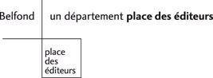

38
Alwynne sauta du train, imprudemment, un quart de minute avant l’arrêt et se précipita vers le bouquet de violettes qui fleurissait toute l’année sur le chapeau d’Elsbeth. Puis il y eut un échange de baisers. Cela ressemblait, pensa Alwynne, aux arrivées en vacances en un temps encore peu éloigné. Mais il n’y avait pas si longtemps, elle se serait occupée exclusivement d’Elsbeth, de ses bagages et de son compartiment oublié ; elle ne se serait pas détournée avec impatience de sa tante pour examiner le quai dans toute sa longueur. Pas un signe de Clare ! Elle qui avait promis de venir l’attendre…
Elle prolongea autant qu’elle put ses conversations avec les porteurs, les contrôleurs et les hommes de devant la gare, mais Clare ne parut pas ; elle quitta enfin la gare, assez posément, à côté de sa tante, le plaisir du retour complètement émoussé.
Toutefois, un télégramme sur la table du vestibule la tranquillisa. Clare regrettait ; Clare était retenue et serait absente encore quatre jours ; elle écrirait. Alwynne secoua son humeur noire et, pensant que la perspective délicieuse de leurs retrouvailles l’attendait encore, put se consacrer toute à Elsbeth. Celle-ci passa quatre journées joyeuses avec une Alwynne devenue rose et gaie, affectueuse et bavarde à souhait ; elle trouva très agréable d’avoir sa nièce pour elle seule, comme son bien propre, fût-ce pour quatre jours. Elsbeth savait peut-être qu’elle était toujours second violon, mais bien qu’il lui coûtât un peu de comprendre qu’elle ne serait jamais plus le premier, elle pourrait être contente de céder la place à Roger Lumsden. Elle hochait la tête en pensant à son manque de logique. Elle pouvait se maîtriser, plutôt que perdre la confiance de la jeune fille – accepter Clare Hartill comme sujet principal de la conversation d’Alwynne, jusqu’à être lasse de ce nom –, mais elle n’entendait jamais assez parler de Roger. Tout ce qu’Alwynne laissait tomber en fait d’incidents, de descriptions, de louanges – Elsbeth découvrit que Roger, de même que Clare, n’avait pas le moindre défaut –, elle le ramassait pour le rapprocher, quand Alwynne était couchée, d’un certain nombre de lettres, alors une demi-douzaine, qu’elle gardait enfermées à clé, avec d’autres lettres plus anciennes dans l’absurde petit tiroir secret de son bureau. Puis elle trottinait encore dans la chambre de sa nièce, pour border le drap ou repousser un couvre-pied ou simplement pour se donner l’illusion qu’Alwynne était encore un bébé et puis, avec un sourire et un soupir, elle retournait à sa chambre, pour faire sa toilette et dire ses prières sans égoïsme à Dieu et à sa courtepointe. Heureux jours et heureuses nuits – quatre heureux jours et quatre heureuses nuits pour Elsbeth.
Puis Clare revint.
Il était naturel qu’Alwynne allât l’attendre et l’accompagnât chez elle, une valise à la main, pour passer une ou deux nuits… Elsbeth accorda que c’était naturel… Trois jours ou même quatre. Mais quand une semaine se fut écoulée, sans autre signe d’Alwynne qu’une maigre carte postale d’excuse, elle pensa qu’elle avait de bonnes raisons d’être fâchée. Non pas contre Alwynne… jamais, bien entendu, contre Alwynne… mais très certainement contre Clare Hartill. Il était désastreux qu’Alwynne fût si bonne. Clare, supposait-elle, avait gardé la jeune femme en prétendant bien haut qu’elle avait besoin de son aide. Naturellement la classe reprenait, avait déjà repris. Clare allait trouver Alwynne utile… Sans doute il était agréable d’avoir de nouveau quelqu’un pour obéir à sa voix et à ses gestes dans l’affairement des premiers jours d’un trimestre… Peut-être probablement – oh ! elle accordait le « probablement » –, Alwynne avait beaucoup manqué à Clare… N’avait-elle pas manqué aussi à Elsbeth ? Mais elle répondit aussi affectueusement que d’habitude à la carte postale d’Alwynne. Si sa nièce était plus heureuse avec Clare, Elsbeth ne lui laisserait pas soupçonner sa solitude. Elle savait qu’un mot suffirait. Alwynne avait le sentiment du devoir. Mais elle désirait une offrande libre, non un tribut.
Malgré elle, cependant, un peu d’amertume se glissa dans sa lettre suivante à Roger Lumsden, qui à force de l’enjôler était entré, elle savait à peine comment, en correspondance régulière avec elle. Elle annonça qu’Alwynne était absente depuis dix jours ; et cette remarque était exprimée platement, sans l’atténuation des subordonnées qui expliquent ou qui excusent.
Sans qu’elle pût s’en douter, cependant, elle n’était pas tout à fait juste pour Alwynne. Les premières heures de réunion avaient certainement chassé la pensée de sa tante de son esprit, mais au bout de deux jours, elle était prête à s’en souvenir et à rappeler à Clare qu’elle devait aussi un peu de son temps à Elsbeth. Peut-être que si elle avait été plus heureuse, elle aurait été moins disposée aux scrupules. Clare avait été certainement contente de la revoir : elle avait, pendant une heure ou deux, été parfaitement délicieuse. Mais en reprenant leur vie commune, Clare ne tarda pas à retomber dans ses mauvaises habitudes d’autrefois ; en prenant sa revanche de ses deux mois d’ennui, en taquinant gaiement Alwynne sur son retour, et aussi en montrant une jalousie déraisonnable, elle mena la vie assez dure à son amie. Car Clare était jalouse, jalouse de ces sept semaines qui ne lui avaient pas appartenu, et partagée entre sa jalousie et le mépris que sa jalousie lui inspirait, était dans une de ces humeurs qu’elle et Alwynne craignaient autant l’une que l’autre.
Les matinées passées à la pension leur apportaient un soulagement à toutes deux, mais dès qu’elles étaient ensemble, le démon de Clare reparaissait. Les scènes étaient incessantes, des scènes de caprices enfantins. Toutefois, Alwynne, peinée et étonnée par la déraison croissante de son amie, ne pouvait résister aux brusques capitulations qui arrivaient toujours à la mettre dans son tort. Elle se répétait que ce devait être elle qui était déraisonnable, qu’elle devrait être flattée plutôt que malheureuse par exemple que Clare ne voulût pas la laisser partir… Elle aimait mieux être avec elle qu’avec Elsbeth, n’est-ce pas ? Bien sûr ! Eh bien, alors ? Cependant, elle ne pouvait s’empêcher de se demander s’il n’était pas arrivé de lettres pour elle, si sa tante, qui l’attendait tous les jours, prendrait la peine de les faire suivre. Roger avait promis d’écrire… Elle pensait que vraiment elle devait rentrer chez elle.
Mais Clare ne voulait pas entendre parler de départ. Elsbeth réclamait Alwynne ? Elle aussi. Elsbeth n’avait-elle pas toujours Alwynne ? Sûrement Alwynne était assez grande pour rester loin de chez elle une quinzaine de jours sans permission ! Vraiment, avec tout le respect qui lui était dû, la vieille tante était un vrai croque-mitaine.
— Clare !
Le ton d’Alwynne marquait un soupçon de reproche.
— Oh ! j’ai dit « avec tout le respect qui lui est dû » ! Mais si elle n’était pas votre tante, je serais vraiment tentée de me débarrasser d’elle, de vous garder tout à fait. Vous aimeriez bien, n’est-ce pas ?
Alwynne refusa de dire oui, mais elle rit.
— « Débarrasser » ? Clare, ne soyez pas absurde !
Celle-ci la regarda en souriant, les yeux plissés à son ancienne manière.
— Vous croyez que je ne pourrais pas me débarrasser d’elle si je le voulais ? Je fais toujours ce que je veux. Voyez Henrietta Vigers.
Alwynne se redressa.
— Miss Vigers ? Mais elle a donné sa démission ! Elle voulait partir ! Elle nous l’a dit ! Voulez-vous dire qu’elle ne voulait pas partir ? Qu’elle y a été obligée ?
— Vous avez déjà vu un lancement de navire ? On presse un bouton électrique, vous savez, un simple contact, c’est extrêmement simple.
Elle s’arrêta, les yeux dansants. Mais Alwynne n’eut pas le clignement d’œil qu’elle attendait.
— Je ne l’aurais pas cru, dit-elle lentement. (Puis avec égarement :) Mais pourquoi, Clare ? Pourquoi, qu’est-ce qui vous a pris ?
— Elle me gênait, répondit-elle nonchalamment.
Alwynne se tourna vers elle, les yeux étincelants.
— Vous voulez dire que vous avez délibérément enlevé son travail à cette pauvre fille ? Si vous avez fait ça… mais je ne le crois pas. Si vous l’avez fait, Clare, excusez-moi, mais je trouve que c’est ignoble.
— Démon, avec le plus profond respect pour vous, cita Clare, d’un air moqueur.
Mais Alwynne n’était pas d’humeur à se laisser calmer.
— Clare, vous n’avez pas fait ça, si ?
— Ma chérie, elle me gênait. Elle vous tracassait et elle me tracassait. Je n’aime pas être tracassée.
La jeune femme frissonna.
— Je vous en prie, Clare. Je déteste vous entendre parler comme ça, même en plaisantant. C’est, c’est si dur.
— « En plaisantant » ? (Clare eut un léger rire. La jeune sévérité d’Alwynne l’amusait. Mais elle s’apercevait qu’elle était allée un peu trop loin :) Eh bien, sérieusement, plaisanterie à part…
Le visage d’Alwynne se détendit. Naturellement elle était sûre qu’il s’agissait d’une plaisanterie.
— Plaisanterie à part, il était temps que miss Vigers s’en aille. J’admets que j’ai dit ma pensée à miss Marsham. Je suis toute prête à en prendre la responsabilité. Elle était trop vieille, trop touche-à-tout, trop intolérante, je ne peux supporter cela. Il a fallu qu’elle parte.
Alwynne prit un air pervers.
— Clare, vous me rappelez un homme que j’ai vu à Compton. Vous vous seriez bien entendus ensemble. Il était fier de sa tolérance aussi. Il était si tolérant qu’il y a cinq cents ans il aurait brûlé tout homme qui n’aurait pas été aussi tolérant que lui. Maintenant, il les fait disparaître avec un haussement d’épaules à la Podsnap. Juste comme vous avez fait avec miss Vigers.
— Qui était-ce ?
— Je ne sais pas. Je ne l’ai vu qu’une fois. Mais il m’a beaucoup amusée. Il n’avait pas la moindre idée qu’il était si drôle.
— Il vous a fait disparaître avec un mouvement d’épaules ?
— Ma chère Clare, est-ce qu’on peut me rabrouer ? Vous pourriez aussi bien rabrouer une balle de caoutchouc.
— Oui, vous avez la peau assez dure, riposta Clare avec intention.
Alwynne recula.
— Vraiment ? Je le regrette. Ce n’était pas mon but. Maintenant ?
Clare bâilla.
— D’abord vous n’avez pas besoin de saupoudrer exclusivement vos conversations de récits sur Dene. Vos gens de Dene m’ennuient plus que tout un chapitre de moines.
— Je le regrette. Clare, j’y ai passé deux mois. Les gens de Dene sont mes amis, de grands amis. Je ne crois pas que vous ayez besoin de faire fi d’eux.
Clare bâilla de nouveau.
— Je me demande pourquoi vous êtes revenue s’ils sont si absorbants. Quel attrait particulier y a-t-il là-bas, pendant que j’y pense ? Les vieilles femmes ou les jeunes hommes ?
Les lèvres d’Alwynne tremblèrent.
— Qu’est-ce qui s’est passé ? Qu’est-ce que vous avez maintenant ? Pourquoi avez-vous tant changé ? Pourquoi dites-vous toujours des choses méchantes ?
Clare haussa les épaules.
— Vraiment, Alwynne, je ne suis pas habituée aux interrogatoires. C’est si ennuyeux de donner des raisons. D’ailleurs, je n’en ai pas. Oh ! ne prenez pas cet air de martyre.
— Je crois que je vais retourner à la maison. Je ne crois pas que vous ayez besoin de moi.
— Mais Elsbeth en a besoin, n’est-ce pas ?
Clare s’installa plus à son aise dans le confortable fauteuil en regardant Alwynne quitter la pièce. Elle resta comme un chat endormi, écoutant les bruits étouffés que faisait Alwynne en préparant ses paquets ; elle la laissa s’apprêter jusqu’au moment où elle mit son chapeau et ses gants, et laça ses souliers, avant de la rappeler, de jouer avec elle et de lui pardonner pour finir. Cependant, elle trouva Alwynne moins souple que de coutume : convaincue de péché, elle était cependant résolue à partir, sinon le jour même – non elle ne partirait pas ce jour-là après s’être si mal comportée – mais le lendemain. Ce serait vendredi – après une quinzaine complète – et samedi était l’anniversaire de Clare, l’avait-elle oublié ? Alwynne y pensait en tout cas. Oh ! elle devait venir samedi, et que dirait Elsbeth ? Il fallait donner au moins une soirée à Elsbeth entre les deux. Après tout, ce n’était pas bien gai pour sa tante d’être seule.
Clare, de bonne humeur pour la première fois de l’après-midi, admit à moitié qu’Alwynne avait raison.
Mais ce jour-là, les remords de la jeune femme furent inutiles. Elsbeth ne s’ennuyait pas du tout. Elsbeth au contraire était formidablement occupée. Elle avait même complètement oublié Alwynne, qui ne lui manquait pas du tout. Elsbeth avait reçu une lettre de Dene le matin et attendait Roger Lumsden à souper.
39
Elsbeth passa sa journée à faire et à refaire ses arrangements méticuleux et inutiles de sa maison et de sa personne, au moyen desquels la femme s’est toujours plu, depuis que le monde est monde, à honorer l’homme, et que lui, l’être incompréhensible, s’abstient immanquablement de remarquer. Les cretonnes propres étaient arrivées à temps et furent mises en place bien lissées, les vases furent nouvellement remplis ; et le feu, quoique les nettoyages de printemps fussent finis, s’étala opulemment dans un âtre sans briques. Les allumettes, avec les cinquante cigarettes qu’Elsbeth avait achetées dans l’après-midi, hésitante et trop confiante envers le débitant de tabac excédé, se trouvaient visiblement dépaysées près du siège qu’occuperait probablement Roger, et la pensée du souper disposé dans la pièce voisine encourageait Elsbeth, comme des années auparavant, une robe neuve aurait pu le faire. Des photographies d’Alwynne à chaque âge parsemaient le piano et les petites tables, dont une que la jeune femme elle-même n’avait jamais vue et qui était placée sur la cheminée, pour que Roger, en saluant Elsbeth, la vît et oubliât d’être intimidé.
Mais ce fut Elsbeth qui fut intimidée, quand Roger, très ponctuel, arriva au milieu des carillons de l’office du soir. Cependant Elsbeth était prête depuis dix-sept heures. Ils se saluèrent par gestes, sans parler, et restèrent quelques minutes le visage souriant et observateur, tandis que le son s’enflait, se prolongeait, décroissait et mourait.
Roger, toujours silencieux, commença à fourrager dans une valise qu’il portait, tandis qu’Elsbeth s’excusait et pour la millième fois disait à son invité qu’elle se demandait pourquoi elle avait pris racine aussi près d’une église, tandis qu’en elle-même une voix dure criait avec allégresse : « C’est son père, c’est tout son père ! Il n’a rien de Rosemary ! » et qu’elle goûtait un étrange triomphe sur la morte qu’elle avait néanmoins été trop douce pour haïr.
Mais tout à coup ses genoux furent couverts de roses, bouquets sur bouquets étroitement serrés par une main masculine, et les phrases cérémonieuses devinrent incohérentes tandis que Roger se baissait et embrassait sa cousine.
Ils furent bientôt amis. Roger, qui ne l’avait jamais tout à fait oubliée, trouva l’aimable vieille fille aussi séduisante que la jolie dame de son enfance. Il l’examina en soupant. Une forme mince, de doux cheveux gris, et des mains carrées et volontaires ; une bouche qui exprimait la bonté, pas forte, encadrée dans des lignes dont la fermeté ne paraissait pas naturelle ; de doux yeux qui n’étaient plus beaux, et un sourire joyeux et fatigué ; un visage doux, en somme, pensa Roger, mais pas heureux. Cependant elle avait Alwynne ! Elle s’agita un peu au sujet du repas, marqua quelque inquiétude pour le café du jeune homme et multiplia ses petites questions et ses petites attentions qui n’avaient jamais rien d’irritant. Tandis qu’elle s’agitait autour de lui, un faible parfum de verveine flottait dans l’air, et sa robe de soie n’avait pas le froufrou des robes de femmes plus jeunes. Elle écoutait bien, mais il devina qu’elle n’était pas bavarde, et plus tard dans la soirée mesura son affection pour Alwynne à sa volubilité sans trêve. Il la trouvait charmante et un peu touchante et se demandait pourquoi personne n’avait jamais tenu à l’épouser.
La timidité d’Elsbeth disparut bientôt ; elle passa vite à l’attitude peu cérémonieuse que prend une tante à l’égard d’un neveu, attitude qu’il attendait évidemment. Il trouva ses manières aimables, et le plaisir manifeste qu’il prenait à sa compagnie aussi charmant qu’étonnant. Elle se dit, en levant pensivement les épaules, qu’elle en soupçonnait la raison ! Cependant, elle était contente.
Le cercle de leur conversation se rétrécissait ; ils parlèrent de son père un peu, de sa mère davantage, de Dene et des séjours qu’Elsbeth y avait fait autrefois. Il décrivit Compton, les Amours, ses jardins et ses roses. Puis avec un rire, il raconta que sans permission Alwynne s’était essayée à tailler les rosiers et que la tentative avait fini par un désastre ; et ainsi il se plongea dans les confidences.
— Je suppose que vous avez deviné que j’ai l’intention, que je désire épouser Alwynne, avec votre permission, se dépêcha-t-il d’ajouter, en lui souriant.
Elsbeth envia sa taille. Pour Alwynne elle ne voulait pas être dominée ; mais elle se sentait un peu devant plus fort qu’elle, et ne devinait pas que sa frêle dignité avait fait son effet.
Elle lui rendit son sourire.
— Je suis contente que vous en parliez. Il faut respecter les cheveux blancs.
— Mais c’est ce que je fais.
— Non. Vous laissez entendre que je suis une tutrice aveugle et stupide. Mon cher enfant, j’ai espéré ceci et je l’ai demandé dans mes prières. Vous, le fils de John, et de la chère Rosemary bien sûr, et Alwynne qui m’est plus chère qu’une fille ! Mais c’est pour ça que je l’ai envoyée à Dene ! (Elle eut la rougeur difficile de l’âge mûr :) Oh ! mon enfant, c’était effronté ! Je faisais un mariage ! Moi ! Et j’ai toujours considéré que c’était très indélicat. Mais je souhaitais tant que vous vous rencontriez. Quand Alwynne m’a parlé si souvent de vous dans ses lettres, j’ai espéré : et puis, quand j’ai lu les vôtres, j’ai été sûre. Vous vous êtes si bien passé de moi pendant vingt-cinq ans, et puis tout à coup les liens de la parenté vous deviennent si chers ! C’était transparent, Roger.
Il se mit à rire.
— Je n’avais pas oublié, quoique ce fût un souvenir très vague. Vous m’avez donné un lapin dans un chou vert qui s’ouvrait. Un dimanche nous avons partagé le même livre de prières. Vous aviez une robe bleue, d’un bleu pâle que l’on ne voit plus maintenant, et les joues très roses.
— Ah ! la robe de crêpe de Chine, dit Elsbeth distraite.
— Je me le suis toujours rappelé et cependant j’avais oublié ce souvenir-là. Alwynne m’en a fait souvenir. Elle vous ressemble par certains côtés, vous savez. Elle m’a rendu extrêmement curieux de vous revoir. D’après ce qu’elle disait, je savais que vous seriez gentille pour moi. (Il sourit :) Elsbeth, je suis terriblement amoureux.
— Est-ce que vous le lui avez dit ?
— Alwynne est une personne assez difficile à saisir. Elle ne comprend que ce qui est noir sur blanc.
— Clare Hartill… je suppose que vous avez entendu parler de Clare Hartill ?
— Si j’en ai entendu parler !
— Clare Hartill dit qu’elle n’a pas l’oreille sûre pour saisir les nuances.
— Et aussi qu’elle est insensible ! Cette femme est idiote !
— Oh ! elle avait raison, Roger, bien qu’à mon avis elle ait dû être en colère quand elle a dit ça. Mais ça veut dire simplement qu’Alwynne a été élevée à écouter les femmes. Elle ne peut pas encore comprendre les hommes. On lui a dit que c’étaient de grands enfants et que son rôle était de se montrer supérieure, mais avec tact.
Il eut un rire étouffé.
— Oui, quand Alwynne a du tact, elle en a ! On ne peut pas s’y tromper, n’est-ce pas ? L’avez-vous jamais vue se faufiler hors d’une pièce lorsqu’elle pense qu’elle est de trop ? Cependant, elle sait garder sa position, à l’occasion. Elle a simplement laissé passer mes insinuations. Mais, comment parle-t-elle de moi, Elsbeth, du moins s’il lui arrive d’en parler ?
— Elle vous apprécie, vous êtes le bon vieux Roger.
— Mais croyez-vous que j’aie des chances ?
— C’est pour ça que je voulais vous voir. Franchement à présent, je ne le crois pas.
Il la regarda froidement, pas du tout déprimé.
— Pourquoi pas ?
— Clare Hartill.
— Ah ! (Il se rassit devant la table, le menton dans ses mains :) Vous croyez que c’est un obstacle ?
— J’ai été son professeur dans le temps. Alwynne est absorbée par elle depuis deux ans. Alwynne parle… Je pourrais faire des comparaisons. Je dois la connaître assez bien.
— Oui. Mais quelle influence peut-elle avoir sur nous deux ? Je sais bien tout le cas qu’en fait Alwynne. Elle est délicieuse sur ce sujet. Elle la croit une perfection, etc. Elle est naïve ; elle en dit plus qu’elle ne sait ou qu’elle ne veut, parfois. Et elle ne regarde jamais les pieds de son idole, n’est-ce pas ? C’est Clare ! et puis Clare ! et encore Clare ! Pour moi, je me représente cette femme un peu comme une brute.
— J’essaie d’être juste. Elle aime Alwynne.
— Pourquoi pas ? Mais qu’est-ce que ça peut avoir à faire avec l’affection d’Alwynne pour moi, si j’ai le bonheur qu’elle en ait ? Et j’ai la fatuité de croire qu’il s’agit simplement d’éveiller Alwynne.
— Vous ne connaissez pas Clare. Si elle sait, elle ne laissera jamais partir l’enfant.
— Mais si Alwynne était fiancée avec moi !
— Elle ne le permettra jamais. Elle jouera de l’affection qu’Alwynne a pour elle.
— Mais pourquoi ? Je n’empêcherai pas leur amitié ?
— Mon cher Roger, le mariage met automatiquement fin à l’amitié. Clare est assez fine pour comprendre ça. Et même, autrement, elle ne voudrait pas partager. Vous ne vous doutez pas combien les femmes sont jalouses.
Roger se renversa sur sa chaise avec un geste d’effarement.
— Ma très chère cousine ! L’époque des sorcières est révolue. Vous parlez comme si Alwynne était sous un charme.
— Pratiquement c’est vrai. Naturellement, Clare dirigerait la question sur un autre terrain ! Ce ne serait pas ce qui convient à Alwynne, ce serait un gaspillage de talent. Elle prétend mépriser les vertus domestiques. Alwynne serait hypnotisée au point de répéter les arguments de Clare comme s’ils reflétaient sa propre opinion.
— De l’hypnotisme ?
— Oh ! pas au sens littéral. Mais elle exerce véritablement une influence mystérieuse sur certaines femmes et surtout sur des jeunes filles. J’ai observé ça si souvent.
— Elle n’est pas mariée ?
— Elle ne parle presque jamais à un homme. Je l’ai vue à des réceptions quand elle était plus jeune. Elle faisait l’effet d’une épave. Les hommes la laissaient seule. Quelque chose en elle semble les repousser. Je crois qu’elle le comprenait. Et elle est fière. Il y a du tragique là-dedans.
— Elle vous repousse ?
— Pas de cette façon. Elle me déplaît. Je la trouve dangereuse. Je la plains vivement. Et je comprends un peu l’attraction qu’elle exerce, mieux que vous, quoique je ne l’aie jamais subie. Vous voyez, l’excentricité, l’anomalie ne touchent pas les femmes comme les hommes. Et elle est d’une intelligence brillante.
— Alwynne aussi ; vous ne diriez pas qu’elle est anormale ?
— Alwynne ? Pas du tout ! Elle est saine et douce comme une pomme. Mais – et c’est grave à son âge – elle est dans des mains anormales. Clare Hartill est bien anormale, spirituellement pervertie, et elle s’est accrochée à l’enfant. Elles s’adorent. C’est terriblement mauvais pour ma nièce. Dans l’état actuel des choses, il vous faudra des mois pour faire refluer l’influence de Clare, même avec votre aide. Du moins si vous réussissez à l’en détacher. Je suis impuissante, naturellement. Aimer, simplement aimer, ne sert à rien. Vous ne pouvez avoir de l’influence que si vous êtes assez fort pour blesser. Je ne fais qu’irriter. Je suis faible. Mais vous pourriez faire ce que vous voulez, je crois. Enlevez-la à cette femme égoïste, Roger. Ça la flétrit !
— Vous croyez, dit-il, qu’elle se contenterait de moi, du mariage comme carrière ? Certainement, miss Hartill a raison en ce qui concerne ses talents.
— Alwynne ? Je ne crois pas, je sais. Tous ses dons ne sont qu’en surface ; au fond c’est une enfant très simple. Se contenter ? Vous ne pouvez pas l’imaginer, Roger, avec des enfants ? Ses bébés ?
Roger rayonna.
— C’est une bien jolie perspective. Eh bien, je dois tenter ma chance.
— Bien entendu, il faut que vous attendiez ; il est encore trop tôt. Même plus tard, si Clare a vraiment besoin d’elle, en a assez besoin pour réprimer ses élans méchants, je crains que vous n’ayez peu de chance. Mais il est possible qu’elle n’en ait pas tant besoin que ça.
— Je ne comprends pas.
— Je veux dire que Clare, avec sa nature capricieuse, peut blesser Alwynne.
— Je croirais même que ça lui est déjà arrivé et assez souvent.
— Oui, mais Alwynne n’a jamais compris, jamais compris que c’était voulu. Elle est toujours si sûre que ç’a été sa faute. Si une fois elle découvrait que Clare la blesse pour s’amuser, vous savez, pour le plaisir de la voir souffrir – comme je suis sûre qu’elle le fait –, ça pourrait mettre fin à tout. Alwynne déteste la cruauté. La mort de cette pauvre enfant l’a ébranlée. Un peu plus, et elle sera désillusionnée.
— Mais toujours fidèle ?
— Sans doute. Néanmoins, le prestige aurait disparu. Elle serait très malheureuse. Alors vous auriez une chance. Cependant je ne pense pas que Clare vous la donne, car, d’après moi, elle tient plus à Alwynne qu’à la plupart des choses. Mais elle est inexplicable ; voilà où vous avez une chance.
— Je vois. (Roger se leva et se redressa :) Pratiquement, je ne dois pas compter sur mon attrait personnel, du tout. Il faut que je surveille les caprices de cette… cette désagréable maîtresse d’école, et que je lui sois reconnaissant quand elle obligera Alwynne à préférer Charybde avec moi à Scylla avec elle. La situation manque de dignité.
Elsbeth rit aussi.
— L’amour manque toujours de dignité, Roger. Qu’est-ce que ça fait si vous l’aimez ?
Elle le regardait anxieusement, tandis qu’il allait à la fenêtre et restait à regarder au-dehors. Il y eut un silence. À la fin, il se retourna.
— Ma chère Elsbeth, c’est un beau plan et une femme pourrait le réussir, je suppose, mais ce n’est pas pour moi. C’est trop tortueux, trop féminin. Je ne veux pas vous blesser. Le fait est que je ne suis pas assez subtil ou assez patient. Du moins, je n’ai pas le genre du chat qui joue avec la souris. Je peux attendre, vous savez. C’est différent. Je peux très bien attendre. Mais je ne veux pas intriguer.
Elsbeth rougit.
— Ce n’est pas une intrigue. C’est la question de comprendre Alwynne et de saisir l’opportunité quand elle viendra.
— De la tromper, de la surprendre et d’être le plus fort en lui persuadant de m’aimer. C’est inutile, Elsbeth ! Ce n’est pas la possession que je veux, c’est Alwynne. Vous ne voyez pas ? Nous ne serions heureux ni l’un ni l’autre. Elle se méfierait toujours de moi et se rappellerait que j’ai profité de la situation. Je finirais par la détester, je crois. Vous ne me comprenez pas ?
Elsbeth était ébranlée par ses propres pensées.
— Je vois, dit-elle enfin. Et je vois que vous ne l’aimez pas, sinon vous la prendriez à n’importe quelles conditions.
— Le feriez-vous ?
— Oui.
— Eh bien, pas moi. Et je l’aime. Mais je veux Alwynne à mes conditions. Est-ce que je fais l’effet d’un affreux poseur ? Cousine Elsbeth, écoutez mon moyen. Je vais m’expliquer avec Alwynne.
— Tout de suite ?
— Tout de suite, dès que je la verrai, je ne veux pas tourner autour du pot.
— Roger, elle ne sera peut-être absolument pas d’humeur à vous écouter.
— Au diable les humeurs ! Je vous demande pardon, Elsbeth. Mais je vais lui dire certaines choses. Si ça ne lui plaît pas, je retourne à Dene. Elle saura où me trouver quand elle changera d’idée. Elsbeth, n’ayez pas l’air si découragé.
— Vous ne comprenez pas Alwynne.
— Je ne veux pas la comprendre, je veux l’épouser. Je dois suivre ma méthode. Est-ce que vous ne voyez pas que tous ces égards, cette façon de respecter des caprices et de disséquer des motifs, cette atmosphère horriblement féminine où elle semble avoir vécu, ces subtilités, ces réserves et cette dissimulation, que tout ça peut se révéler mauvais pour elle ? Il me semble qu’on a toujours eu bien de la sollicitude pour elle. Vous, avec votre affection inquiète, cette maudite femme avec son scalpel et sa sonde, ni l’une ni l’autre ne la laissez tranquille une seconde. On s’occupe toujours d’elle. Eh bien, je vais la laisser tranquille ! Ça lui donnera une chance.
— Je ne l’ai jamais gâtée.
Elsbeth s’esquivait par la tangente.
— J’en suis sûr. Je me rappelle que père vous donnait en exemple à ma mère autrefois. Il disait qu’il ne connaissait pas de femme plus judicieuse dans sa façon d’élever des enfants.
— Vraiment ? dit Elsbeth.
— Mère était terriblement ennuyée, continua Roger réprimant son rire. J’avais hurlé pour avoir une quatrième brioche et je l’avais obtenue.
— Je n’ai jamais gâté Alwynne, répéta Elsbeth d’un ton sans expression.
— C’est impossible, remarqua Roger avec conviction.
Elsbeth le regarda et se mit à rire.
— Vous êtes donc humain ! dit-elle, je commençais à en douter !
— Quand j’entame le sujet des qualités adorables d’Alwynne, lui répondit-il en riant, nous sommes évidemment cousins, n’est-ce pas ? Mais vraiment, j’ai essayé le détachement, la critique, l’analyse et tout ce que vous croyez important. J’ai voulu voir ce que vous vouliez dire, cousine Elsbeth ; et je vois bien que nous désirons tous les deux la même chose. Mais quant aux moyens je crois que je dois suivre ma méthode.
Elle le regarda d’un air de doute. Mais il semblait très grand et buté dans la petite pièce et complaisamment sûr de lui.
— Vous me prenez pour une vieille couveuse en fureur, n’est-ce pas ? Et un peu ennuyée pour son caneton ?
— Je pense que vous êtes un vrai amour, dit Roger.
— Vous viendrez demain ? J’espère qu’Alwynne sera de retour.
— À quelle heure a-t-elle une chance d’arriver ?
— Vers seize heures, si elle vient. Je pense qu’elle déjeunera avec Clare.
Il secoua la tête avec humeur.
— Très bien. Demain à seize heures précises il y aura une bataille numéro un. Demain, j’irai chercher Alwynne chez miss Hartill. Au revoir, cousine Elsbeth.
À la porte, il se retourna.
— Elsbeth, il y a à Dene une maison que je lorgne. Il y aura une chambre dans une tourelle. Mes plus belles roses grimperont jusque dans la chambre. Ce sera la vôtre. Et puis, Elsbeth, personne d’autre que vous ne dirigera la nursery.
Il avait fermé la porte avant qu’elle ait pu répondre et il l’entendit rire en descendant, deux par deux, les marches basses.
Elle alla à la fenêtre et regarda sa silhouette robuste disparaître dans l’ombre.
— Il ressemble beaucoup à son père, dit pensivement Elsbeth, en jetant un coup d’œil sur le portrait passé.
La nuit s’épaissit, et les étoiles se mirent à scintiller.
— Il ne sera jamais l’homme qu’a été son père ! s’exclama tout à coup Elsbeth d’un air de défi.
Ses mains tremblaient tandis qu’elle débarrassait les restes du repas. Elle balaya l’âtre, mit soigneusement de côté les charbons, et rangea la pièce déjà en ordre. Les roses de Roger étaient encore en tas sur la chaise de paille. Elle les rassembla et les porta dans la minuscule salle de bains pour qu’elles pussent boire à leur soif toute la nuit. Leur parfum était fort et doux. Puis elle alluma sa bougie et se prépara à se coucher.
Les draps étaient très froids. Elle essaya de ne pas penser au père de Roger, couché dans une tombe qu’elle n’avait jamais vue. L’ancien et cruel désir d’entendre sa voix, de voir son visage et la douceur de son sourire s’était emparé d’elle. Elle éclata en larmes douloureuses. Les heures passèrent.
Certainement, il épouserait Alwynne… Alwynne serait heureuse, c’était réconfortant. Roger serait bon pour elle. Un bon garçon, un cher garçon…
— Et il aurait pu être mon fils, cria Elsbeth à la nuit indifférente.
40
Roger ne livra jamais sa grande bataille à Clare, car au tournant de Friar’s Lane, il rencontra Alwynne elle-même, se traînant sur les pavés, accablée par le poids de ses paquets et les lourds plis de son imperméable suspendu à son bras. Ses cheveux étaient défaits par le vent qui avait tiraillé et déplacé son chapeau détaché ; son visage était tiré et sombre. Elle avait un air d’épuisement et de démoralisation indéfinissable que Roger reconnut avec colère… Il l’avait déjà vu, pendant les premières semaines de son séjour à Dene. Ses pensées étaient évidemment au loin, et elle l’aurait dépassé sans lui donner un regard s’il ne l’avait pas arrêtée. Elle tressaillit violemment quand il lui parla – il eut l’impression d’éveiller un dormeur accablé de cauchemars –, puis son visage devint radieux.
— Roger, cria-t-elle, et elle rayonna comme une enfant ravie.
Il s’empara de ses paquets et ils continuèrent à marcher. Les questions et les exclamations d’Alwynne se bousculaient. Roger à Utterbridge ! Pourquoi était-il venu ? Combien de temps resterait-il ? Comment les Amours et Dene pouvaient-ils se passer de lui ? Quand était-il arrivé ?
Roger lâcha sa bombe.
— Hier. Je suis allé souper chez Elsbeth. Nous avons causé longtemps.
Son ton en disait long. L’animation du visage d’Alwynne disparut. Elle sembla surprise et extrêmement ennuyée.
— Elle savait que vous veniez ?
— Oui.
— Pourquoi donc ne me l’a-t-elle pas fait savoir ? Elle ne vous connaît même pas ! Elle ne vous a pas vu depuis que vous étiez petit ! C’est extraordinaire de la part d’Elsbeth.
— C’est moi qui n’ai pas voulu.
— « Pas voulu » ? (Alwynne le regarda stupéfiée :) Roger, je crois que vous êtes fou !
— Élégant autant qu’exact ! Ne vous tourmentez pas. Elsbeth et moi nous nous entendons. D’ailleurs nous avons correspondu.
— Elsbeth et vous ?
— Oui. C’est un peu pour ça que je suis venu. Je voulais la connaître. Vous voyez, votre description et ses lettres ne s’accordaient pas. Et je suis venu. Nous nous sommes très bien entendus. Je suis encore passé chez elle à l’improviste pour le petit déjeuner ce matin. Elle n’a pas fait d’histoires, elle a pris ça très bien. J’imagine que vous n’appréciez pas assez notre cousine. Elle le sait aussi ; elle n’est pas sotte ! J’ai découvert ça quand nous avons parlé de vous.
— Elsbeth s’est plainte de moi ? À vous ?
Le ton d’Alwynne annonçait un mauvais quart d’heure pour Elsbeth.
— Pourquoi pas ? Vous n’êtes pas sacrée, n’est-ce pas ? ricana Roger.
Alwynne avait envie de le gifler. C’était un nouveau Roger. Prendre une telle attitude, s’allier avec Elsbeth, la laisser de côté ! Roger ! c’était insoutenable… Et elle avait été si ravie de le voir, il lui avait même fait oublier Clare. Clare… Elle recommença à repasser dans son esprit la scène de la veille, se rappelant ce qu’elle avait dit, le comparant à ce qu’elle avait voulu dire ; transpercée de nouveau par les manières de son amie ; torturée par son impuissance, quand la voix lente de Roger ramena ses pensées au présent.
— Vous avez quitté Elsbeth pendant quinze jours, dit-il d’un ton accusateur, tandis qu’ils entraient dans les jardins de la ville.
Le ton du jeune homme la rendit furieuse une fois de plus.
— Certainement. J’étais chez des amis. Vous y trouvez à redire ?
— Une amie, corrigea-t-il.
Elle rougit.
— Clare Hartill est ma meilleure amie.
— Dites plutôt la pire de toutes.
— Comment osez-vous dire ça ? Comment osez-vous parler ainsi de mes amis ? Comment osez-vous me parler ?
Il continua sans s’émouvoir :
— Ne soyez pas ridicule, Alwynne. Votre meilleure amie est votre tante Elsbeth, vous devriez le savoir. Je pense que vous ne la traitez pas bien. Vous êtes restée quinze jours chez cette… amie ; vous êtes restée sans la consulter.
— J’ai téléphoné, s’emporta Alwynne, malgré elle.
— Et depuis vous lui avez envoyé une carte postale. Elle n’est même pas sûre que vous rentriez aujourd’hui ; elle n’a qu’à rester bien tranquille à attendre que vous, non je veux être juste, que votre amie veuille bien vous renvoyer, éreintée et malheureuse comme un chien battu. Et Elsbeth doit vous réconforter, vous dorloter, vous remettre d’aplomb, puis vous retournerez chez cette femme, qui vous videra encore une fois de votre force et de votre cœur, et vous êtes là à l’appeler votre « meilleure amie ». Je trouve que ce n’est pas de chance pour Elsbeth.
Alwynne oublia sa dignité étudiée dans sa colère. Elle se retourna vers lui comme une écolière furieuse.
— Voulez-vous vous taire, s’il vous plaît ? Comment osez-vous parler ainsi de Clare ? Si Elsbeth a envie de se plaindre, ça ne vous regarde pas, en tout cas. Je ne vous parlerai jamais plus, jamais, ni à Elsbeth non plus.
La voix lui manqua, elle était sur le point de pleurer.
Roger la prit par le bras et l’attira vers un banc.
— Vous feriez mieux de vous asseoir, dit-il. Nous avons encore des tas de choses à nous dire, plus que vous ne pouvez imaginer. Et si nous devons nous attraper, finissons-en à ciel ouvert, c’est beaucoup moins dangereux. Il ne faut jamais se mettre à l’abri quand le tonnerre gronde. Je sais ce qu’il vous faut.
Il l’avait vue fourrager dans son sac et sa poche, et avait ri sous cape. Il connaissait son Alwynne. Il sortit un mouchoir de soie tout propre et l’agita devant elle. Elle le saisit avec une hâte qui manquait de retenue.
— Dites merci d’abord, dit-il en le tenant fermement.
Un moment la victoire fut incertaine.
— Oh ! oh ! merci ! dit Alwynne avec une belle insouciance et elle l’attrapa.
Leurs yeux se rencontrèrent. Il était impossible de ne pas sourire.
— Du reste, observa Alwynne un peu plus tard, vous n’avez pas le droit de me parler comme ça, Roger, quoi que vous pensiez. Vous n’êtes pas mon cousin.
— Je suis celui d’Elsbeth. J’ai l’idée qu’elle a besoin d’être défendue.
Alwynne se mit à rire.
— Vous savez que j’aime énormément Elsbeth. Vous le savez. Je suis ingrate avec elle quelquefois, vous avez raison, mais elle n’a vraiment aucun besoin d’être défendue. Je vous en donne ma parole.
— Pas contre vous, je le sais. Franchement, sans vouloir être grossier envers votre amie, je crois qu’elle vous rend indifférente aux sentiments d’Elsbeth. Elsbeth était terriblement blessée cette semaine, et un amour de ce genre-là on n’aime pas le voir blessé.
Alwynne le regarda pensivement.
— Roger, supposons que quelqu’un soit méchant pour moi, me fasse mal, très mal, très souvent, presque exprès, est-ce que vous me défendriez ? Vous en soucieriez-vous ?
— Je ne le permettrais pas, grommela-t-il.
— Si vous ne pouviez pas l’empêcher ?
— Je ne le permettrais pas, répéta-t-il avec obstination.
— Mais en prendriez-vous la peine ?
— Bien sûr. Quelles bêtises vous dites ! Bien sûr. Mais je ne le permettrais pas.
— Oh ! Roger, cria-t-elle soudain, pitoyable. On me fait mal quelquefois, oh ! oui, vraiment.
Roger regarda autour de lui avec une prudence qui ne lui était pas habituelle. Les jardins étaient vides. Il n’y avait même pas un flâneur en vue. Il mit son bras autour de la taille de la jeune fille et l’attira gauchement vers lui. Elle céda comme une enfant fatiguée, et resta tranquille, regardant avec des yeux pleins de larmes la corbeille de tulipes éclatantes de l’autre côté de l’allée.
— Je crois que vous avez soupé de votre pension, dit-il au bout d’un moment, comme s’il n’avait pas compris l’allusion à Clare.
Elle fit un signe affirmatif.
— Je ne suis pas paresseuse, Roger ; vous savez que ce n’est pas ça. C’est seulement l’atmosphère, et cet encombrement terrible. Toutes ces femmes si serrées, leurs enthousiasmes, leurs embarras, leurs airs importants. Elles travaillent beaucoup ; toutes sont consciencieuses et pleines d’ardeur ; plus que ne le serait un groupe d’hommes, d’après moi. Mais voilà, elles sont gentilles quand elles sont seules, mais toutes ensemble, je ne sais comment, elles vous étouffent. Et puis, elles ont toutes des voix aiguës qui piaillent quand elles y mettent le plus de volubilité. Vous savez que la première chose qui m’a plu en vous, Roger, c’est votre voix ? Elle est lente, grave et reposante, c’est une voix raisonnable. Il ne faut pas que vous pensiez que je ne suis pas juste envers la pension. Les enfants sont toutes extrêmement intéressantes, et les femmes sont délicieuses, et il y a toujours Clare, seulement, nous nous portons mutuellement sur les nerfs.
— C’est la même chose dans une école de garçons.
— C’est vrai ? Je n’ai vu que Compton. Je ne sais pas comment l’éducation mixte agit sur les garçons, mais je suis sûre que c’est bon pour les filles et pour les maîtresses aussi. Naturellement, elles ne sont pas très différentes des miennes ; mais elles le paraissaient. Elles avaient de la place pour se mouvoir. Elles n’étaient pas toujours à se frotter les unes contre les autres comme des pommes dans un panier. Tout paraissait si naturel et si gai. Partout de l’air pur. Et, depuis mon retour, il me semble que je ne peux plus respirer. Je crois que ça m’a changée de voir tout ça ; et je ne peux pas le faire comprendre à Clare. Elle croit que j’ai aimé Dene parce que j’avais envie de flirter.
— Ça lui ressemble.
— Oui, je sais que vous pensez ça, répondit-elle avec gêne, mais elle n’est pas si… horrible. C’est pourquoi ça me blesse tant qu’elle ne puisse pas comprendre. Comme si j’avais jamais pensé une chose pareille avant qu’elle m’en parle ! Seulement j’aime parler aux hommes, vous savez, Roger, parce qu’ils ont souvent des esprits très intéressants, et il est plus facile de découvrir ce qu’ils pensent au fond qu’avec les femmes. Mais ils assomment Clare.
— Vraiment ?
Roger avait son opinion personnelle là-dessus. Mais il trouva qu’il était difficile de s’empêcher d’embrasser Alwynne quand elle le regardait avec des yeux innocents et faisait des affirmations absurdes ; aussi regarda-t-il les tulipes.
— Vous voyez, elle croit, nous croyons toutes les deux, que lorsqu’on a une véritable amie, ça vaut tout autant que d’être amoureuse, de se marier et tout ça, et c’est beaucoup moins banal. D’ailleurs, il y a les ennuis – les hommes fument, vous savez – et les enfants. Clare déteste les enfants.
— Et vous ?
— Moi ? Je les aime. C’est le pire. J’avais l’intention quand je serais vieille d’en adopter, mais Clare ne le permettrait pas, j’en suis sûre. Certainement tant que Clare aurait besoin de moi, ça me serait égal. Vivre avec Clare toute ma vie, oh ! vous savez combien j’aimerais ça. Je l’aime tendrement, Roger, malgré tout ce que je vous ai dit. Seulement, Roger, supposons qu’elle se fatigue de moi. Depuis mon retour, je crois quelquefois que c’est le cas.
— Pauvre petite !
— C’est honteux de pleurnicher près de vous ; ce n’est pas intéressant et, bien sûr, je n’ai pas l’intention d’attaquer Clare une minute, seulement tout ce que je fais l’est de travers. Quand elle se moque, je deviens nerveuse et plus je suis nerveuse, plus je fais les choses de travers, vous savez, des choses stupides, comme renverser le thé ou me cogner aux meubles. Et alors, elle est furieuse et ça aboutit à une scène. C’est vraiment malheureux. Nous en avons eu une hier et une autre ce matin. C’est ma faute certainement : je lui porte sur les nerfs.
— Vous ne m’avez jamais porté sur les nerfs, dit Roger, d’un ton suggestif.
— Pas même quand je coupe vos plus jolies roses ?
Elle le regarda de biais.
— Tant que vous ne coupez pas vos doigts roses ; vous avez de jolis doigts, Alwynne.
— Roger, vous êtes réconfortant ! Je voudrais, je voudrais que Clare me traite comme vous, quelquefois. Vous me remontez aussi, mais vous ne me rendez jamais nerveuse. Je suis sûre que je ne lui causerais pas si souvent des déceptions si elle le faisait.
— Alwynne, reprit-il avec un clin d’œil, ne parlez plus. J’ai fait une découverte.
— Laquelle ?
— Vous tenez dix fois plus à moi qu’à cette bonne dame. Avouez-le.
— Roger !…
Alwynne était outrée. Elle essaya de se redresser, mais le bras de Roger ne bougea pas. C’était un bras vigoureux, et il la retint un peu plus fermement.
— Vous dites des bêtises. Laissez-moi me redresser, je vous prie.
— Vous avez raison. C’est tout à fait vrai, mon enfant, et vous le savez. Ah ! oui, elles sont d’une couleur charmante, n’est-ce pas ?
Car Alwynne regardait les tulipes avec une indifférence affectée. En secret, elle était un peu agitée. C’était un nouveau Roger. Il était fou, bien sûr, mais si gentil. Elle se demanda ce qu’il allait dire.
— Examinons les preuves. Vous avez été très contente de me voir ; voyons, est-ce que ce n’est pas vrai ?
— Je suis toujours contente, remarqua tranquillement Alwynne, les yeux tournés vers les tulipes, de voir de vieux amis.
— Oui, mais nous ne sommes pas exactement de vieux amis, si vous parlez de la durée de l’amitié. Quant à l’âge, j’ai eu trente ans en mars. Je ne radote pas encore.
— Je ne parle pas d’âge. À trente ans, on est très jeune. Clare a trente-cinq ans. Comme vous cherchez les compliments, Roger !
— Eh bien, je ramènerai un trésor un de ces jours, j’espère. Mais reprenons. D’abord vous avez été bien contente de me voir. Ensuite vous avez accepté mon sermon avec assez de soumission pour vous ! Et vous avez déjà reçu un savon aujourd’hui pendant lequel, je suppose, vous n’étiez rien de moins que soumise.
— Je ne vous ai pas dit…
— Il y avait une lueur dans vos yeux. Vous n’imaginez pas comme votre visage vous trahit, Alwynne. Troisièmement vous m’avez fait comprendre au moins une bonne demi-douzaine de fois que miss Hartill n’en vaudrait que mieux si elle avait quelques-unes de mes rares vertus. Vous avez complètement mouillé le col de ma veste, vous n’avez pas besoin d’essayer de bouger, et je ne vous vois pas gâtant souvent de cette façon la blouse du dimanche de votre Clare, eh ?
Alwynne fut obligée d’être de l’avis des tulipes.
— Je le pensais. C’est pourquoi, après avoir examiné les preuves, je dis qu’au plus profond de votre cœur vous tenez dix fois plus à moi qu’à miss Clare Hartill.
Le piège était tendu de façon tentante. Alwynne ne pouvait résister à l’analyse de ses propres émotions. Elle mit le pied dedans.
— Je ne sais pas, je me demande si vous avez raison. Peut-être que j’ai plus d’affection pour vous. J’aime Clare, c’est tout à fait différent. On ne pourrait pas avoir de l’affection pour Clare, cela serait banal. Elle est la merveille qu’on adore. Elle est comme une cathédrale, une sorte de mystère. Et vous êtes comme une villa de campagne, Roger. Naturellement, on ne pourrait pas avoir de l’affection pour une cathédrale.
— Une villa, observa Roger, en regardant à son tour les tulipes, peut être quelque chose de très confortable. Surtout si elle est grande. Holt Meadows par exemple. Mes locataires partent en juin, vous le saviez ? Il y a des arbres en espalier et un terrain de croquet.
— Un tennis ?
Roger avoua craindre que les tulipes ne trouvassent l’endroit trop petit pour un tennis.
— Mais on pourrait faire un terrain dans le pré de Nicolas Nye, lui rappela Alwynne.
Roger pensa que ce serait amusant d’habiter là, avec ou sans tennis. N’était-ce pas l’avis des tulipes ?
Les tulipes étaient assez de cet avis.
— On pourrait acheter le bois de la Sorcière pour un morceau de pain, à mon avis ; vous savez qu’il borde le pré. Pensez-y : tout le bois de la Sorcière comme parc !
— Et défense d’entrer ! Plus de jacinthes piétinées ! ou de bouteilles de ginger ale ! Oh ! Roger !…
Une Alwynne ravie, délicieuse, oubliait complètement les tulipes ; mais elles inclinaient la tête très agréablement quand même.
— Un sentier mènerait au jardin des Amours et à mes serres. Avec des poulets dans un coin du pré. Ça vous regarderait.
— Tous des blancs ?
— Il vaut mieux des Orpingtons fauve. Elles pondent mieux. Rappelez-vous les ennuis de Jeanne ! Vraiment, la quantité d’œufs !…
— Chère Jeanne. Et d’ailleurs il m’en faut pour les attraper. Je les adore quand ils sont tout duvet et piaillements ; et des canards aussi, Roger. Nous n’aurons pas de couveuses, n’est-ce pas ?
— Non, mon Dieu, ce sera amusant. Vous porterez des robes imprimées au déjeuner, Alwynne, mauves, avec des pois.
— Vous êtes très difficile.
— Comme celle que vous portiez à la foire, vous savez.
— Oh celle-là ! Vous voulez dire… Très bien. Mais je porterai des robes d’intérieur tous les après-midis, avec des dentelles et des ruches. Elsbeth dit que c’est très théâtre.
— Très bien ! Nous mangerons des muffins…
— Et nous lirons des tas de livres.
— Je pourrai fumer ?
— Cela salira les rideaux…
— J’en achèterai des neufs toutes les semaines.
— Et nous n’y serons jamais pour les visiteurs…
— Juste nous deux.
Alwynne poussa un soupir satisfait.
— Oh ! Roger, ce serait assez agréable. Vous savez bien inventer.
Il se mit à rire.
— Alors, nous considérerons que c’est décidé.
Il pencha la tête et l’embrassa.
Un baiser très léger – un essai aérien et fugitif de baiser –, un baiser qui mieux que l’humeur du jeune homme convenait au moment présent. Mais Roger pouvait employer une tactique de temporisation. Alwynne pensa que c’était une boucle qui effleurait son front ; les tulipes ne le crurent guère. Roger aurait pu trancher la question, mais elles ne voulurent pas avoir recours à lui. Tout le monde était un peu troublé, très incertain quant à la conduite à tenir. L’attitude des tulipes était franchement alarmante pour Alwynne, qui (si le baiser avait été vraiment donné) était prête à être digne et indignée. Les tulipes cependant semblaient penser qu’un baiser était un méfait assez agréable. « Quelqu’un en tout cas nous juge dignes d’être embrassées » disaient les tulipes d’un air de défi, avec des yeux insolents tournés vers la vision du visage horrifié de Clare. Puis, se tournant prestement, elles rappelèrent à Alwynne que ce baiser venant d’un Roger patient et protecteur, était la suite la plus naturelle et la plus fraternelle de leur rêve. Alwynne n’en était pas sûre ; Roger se montrait sous un jour nouveau ; le baiser (s’il avait eu lieu) n’était pas le symptôme le moins émouvant et le moins alarmant de cette transformation. Il n’était plus le Roger des jours de Dene, disparu depuis moins d’un mois, ou, plutôt, le Roger de Dene apparaissait comme un personnage à facettes diverses, grand aussi, mais plus fort que la Alwynne complexe, ayant des humeurs qui répondaient aux siennes et les enveloppaient comme les mains d’une femme attrapent et couvrent le poing faible d’un bébé. Plus que sa force, sa douceur la troublait. Si longtemps prisonnière de Clare, se meurtrissant toujours contre les murs étroits de cet esprit tortueux, elle aurait été indifférente à toute dureté venue de lui ; mais sa bonté et sa simplicité la désarmaient. Il avait raison : elle avait sa fierté. Clare ne savait pas deviner les moments où sa possession d’elle-même était compromise. Mais avec Roger, à quoi bon feindre ? Il avait été réconfortant de pleurer à son aise. Elle se rappela le premier des rares baisers de Clare, les doigts maigres qui avaient agrippé ses épaules ; la longue et farouche étreinte ; le geste rude qui l’avait libérée, rejetée de côté.
Mais Roger – si vraiment elle n’avait pas rêvé – avait été rassurant. Ici les tulipes intervinrent effrontément pour indiquer qu’il serait délicieux de mettre les bras autour du cou de Roger et de rendre ce baiser supposé. Remarque, bien entendu, dont aucune fleur, sauf la tulipe d’un rouge impertinent, ne pouvait être capable. Alwynne était horrifiée devant elles. Horrifiée par les tulipes, tourmentée par ses propres incertitudes, intriguée par le visage imperturbable qui laissait tomber un sourire sur elle. On n’y lisait certainement pas les signes d’une mauvaise conscience. Probablement tout l’incident était dû à l’imagination déréglée des tulipes. Il y avait assez longtemps qu’elle regardait les signes que lui adressaient ces démons printaniers. Il était temps de rentrer.
Elle s’étonna de nouveau que le bras de Roger ne fût plus autour d’elle, qu’il ne fît aucun effort pour la retenir, ou pour reprendre la conversation, qu’il marchât près d’elle comme à l’ordinaire, sans prendre aucune initiative. Une ou deux fois, lui jetant un regard, elle surprit un sourire d’inscrutable satisfaction, mais il ne parla pas ; il rencontrait simplement son regard d’un air ferme, souriant toujours, jusqu’à ce qu’elle baissât de nouveau les yeux. Un mois auparavant, elle aurait défié ce sourire, aurait examiné et interrogé. Aujourd’hui, chose étrange, il l’intimidait. Vraiment, c’était un nouveau Roger ! Elle ne pensa pas à une nouvelle Alwynne.
Cependant, malgré sa perplexité et sa réelle fatigue physique, Alwynne marchait d’un pas leste et le cœur léger. Comme d’habitude, elle était absurdement touchée par les mouvements qu’il faisait, sans s’en rendre compte, pour la protéger. Le contact de son bras aux carrefours, les changements de place en passant sur le trottoir, les petites courtoisies que la jeune fille élevée par des femmes avait pratiquées sans les recevoir, lui faisaient un effet considérable. Elle se sentait comme une grande écolière, partenaire involontaire à toutes ses leçons de danse, qui, à son premier bal, accepte, avec délices, un cavalier.
En marchant, elle donna à Roger de petits regards d’amitié, mais ne dit rien. Pourtant, elle aurait parlé, s’il l’y eût invitée. Il était résolument silencieux ; et pour quelque obscure raison ce silence était plus embarrassant pour elle que sa loquacité de tout à l’heure. Peu à peu, elle remarqua sa robe chiffonnée et ses cheveux défaits, un bouton manquait à son gant, bagatelles dont elle ne se préoccupait pas souvent. Elle se demanda si Roger avait remarqué l’absence du bouton, espérant avec ardeur que non. Elle regardait vaguement les vitrines dont le reflet terne ne pouvait lui donner la conviction que son chapeau était droit. Et elle se dit aussi que Roger était accablé par des paquets ridicules, que les paquets étaient à elle. Elle était sûre que la ficelle lui coupait les doigts. Elle était repentante, sachant qu’il ne lui permettrait pas de l’aider, et très ennuyée. Elle avait été assez souvent grondée pour sa manie des paquets, et elle s’était moquée d’Elsbeth ; mais sa tante avait tout à fait raison. Accabler Roger comme ça ! Qu’est-ce qu’il penserait d’elle ! Il n’avait pas parlé depuis dix minutes. Évidemment, il était ennuyé… Il valait mieux rentrer aussi vite que possible.
41
Elsbeth, assise à la fenêtre, les avait vus descendre la rue et se trouvait à la porte pour les accueillir. Alwynne reçut un baiser un peu grave, mais Elsbeth et Roger se saluèrent comme les plus vieux et les plus sûrs des amis. Alwynne leva les sourcils, mais sa tante ne parut pas le remarquer. Elle reprocha à Roger d’être en retard, lui montra ses roses, ranimées et parfumées dans leur coupe bleue et, quand Alwynne se disposa à aller s’habiller, elle déclara qu’il avait l’air de mourir de faim, que le souper était prêt depuis longtemps et qu’il fallait l’avaler tout de suite. Roger l’appuya et ils allèrent souper.
Alwynne rageait en silence. Qu’avait Elsbeth ? Elle lui avait à peine dit bonsoir. Et maintenant cette irréflexion… Insister pour se mettre à table tout de suite, sans lui donner le temps de se rendre présentable ! Ne voyait-elle pas combien elle était fatiguée et quel besoin elle avait de savon et d’eau, d’une brosse et d’un peigne, sans parler d’une plus jolie robe ? Ce n’était pas juste ! Elsbeth aurait pu savoir qu’Alwynne voulait être jolie quand Roger était là… Elle ne voulait pas ressembler à un épouvantail, quelle que fût la façon dont sa tante pût s’habiller…
Elle s’aperçut cependant, tandis qu’Elsbeth, abandonnant le rôti à Roger, faisait une salade sous ses yeux d’après une recette qu’il lui avait donnée, qu’Elsbeth à cette occasion, n’était rien moins qu’apprêtée. Elle portait sa plus belle robe de soie violet foncé et l’écharpe de vieille dentelle, qui, Alwynne le savait bien, ne voyait la lumière que les grands jours de fête ; et un petit bouquet des roses de Roger était fixé à sa ceinture. Ses cheveux étaient relevés d’une façon nouvelle ; un petit nœud de velours noir rehaussait leur blancheur argentée, ils étaient ondulés aussi, et ramassés agréablement à l’endroit des tempes. Alwynne, bouche bée, comprit qu’Elsbeth devait avoir rendu visite au coiffeur. Elle comprit aussi pour la première fois combien sa tante avait dû être jolie, à une époque, à la manière délicate d’une rose de mai.
À tout autre moment, Alwynne aurait été ravie de cette amélioration, car elle était fière comme une fille pouvait l’être de sa mère et avait lutté infatigablement contre son indifférence pour la toilette. Elle savait qu’elle aurait dû saluer ce changement, mais à son ennui elle le trouva irritant. Il lui déplaisait d’être elle-même décoiffée et fatiguée, tandis qu’Elsbeth lui faisait face, reposée, élégante et digne. Roger était si évidemment impressionné. Roger à qui Elsbeth avait été expliquée avec tant de soin, avec tant de précautions. Ça la faisait paraître si sotte ! Comment aurait-elle pu savoir qu’Elsbeth aurait eu ce caprice ? Elle n’avait jamais deviné que sa tante pouvait se rendre aussi charmante. Et elle en robe de ville ! Avec ses cheveux en broussaille ! C’était trop mal ! Cependant ça ne semblait pas avoir d’importance : Roger, c’était assez clair, ne lui accordait pas un regard.
Son ressentiment grandit. Elle essaya de se joindre à la conversation, mais bien que Roger l’écoutât avec gravité et répondît poliment – elle ne surprit jamais son clignement d’yeux –, il rejetait invariablement la balle à Elsbeth dès que c’était possible. Elle parla de Dene, fit des allusions intimes à leurs promenades et à leurs aventures ; et il se tourna pour les expliquer, pour faire participer Elsbeth à la conversation d’une manière significative, qui fit rougir Alwynne de dépit. Elle se mit à désirer l’avoir à elle pour se quereller ou faire la paix, comme il lui plairait, mais en tout cas, recommencer à l’avoir à elle… Ne pouvait-on pas avoir un moment de conversation sans y traîner Elsbeth derrière soi ? Comme Roger était absurde !
Elle comprit lentement que ni Roger ni Elsbeth ne la trouvaient indispensable, et sa surprise n’eut d’égale que son indignation. Sa tante, en particulier avec ses manières subtiles – c’était dégoûtant de sa part –, il n’y avait pas moyen de l’approcher… Elle était fâchée de quelque chose. Alwynne le voyait à certains signes. Elle se dit bien qu’elle aurait dû écrire… Mais elle avait envoyé une carte postale. On ne pouvait pas toujours écrire des lettres ! Tout le monde, sauf Elsbeth, aurait oublié l’affaire, puisqu’il y avait un visiteur, mais sa tante était si rancunière… Ici la conscience rebelle d’Alwynne s’allia avec son sens de l’humour pour protester contre l’image d’une Elsbeth rancunière. L’une et l’autre éclatèrent d’un rire de tendresse à cette idée. Alwynne dut rire aussi avec un peu de remords et admettre que c’était une idée folle, qu’Elsbeth, depuis qu’elle la connaissait, avait été la plus douce et la plus indulgente des tutrices, et qu’elle, Alwynne, avait été indéniablement négligente. Cependant, pourquoi fallait-il qu’Elsbeth montre la cuisine à Roger ? Qu’est-ce qu’il lui disait, là-dedans ? Et pourquoi riaient-ils tous les deux comme ça ?
— Glou glou glou, murmura Alwynne avec méchanceté, comme c’est drôle, n’est-ce pas ?
Elle continua ses réflexions.
Encore des histoires pour enlever le couvert ! Une des idées absurdes d’Elsbeth, parce que c’était le soir de sortie de la bonne. Elle le ferait bien à son retour… Toujours tant d’histoires et tant d’agitation ! Que penserait Roger d’elles ? Qu’ils restaient longtemps ? Elle pourrait profiter de l’occasion pour aller changer de robe. Elle hésita. Qu’y avait-il ? Que disait Roger ? Elle entendait le murmure de sa voix grave et le staccatto de sa tante, mais les paroles étaient indistinctes. Après tout, pourquoi se tracasserait-elle pour se changer ? Elsbeth ne manquerait pas de faire des remarques inutiles. Et ce serait bien égal à Roger : il était trop occupé. Personne ne se souciait, personne ne s’occupait d’elle. Elle retournerait chez Clare demain… Mais si Clare était encore de la même humeur qu’aujourd’hui ?
Quelle semaine désastreuse… Même si Clare n’avait pas été aussi capricieuse, Alwynne se serait sentie mal à l’aise : elle savait parfaitement bien qu’elle devait consacrer à sa tante les premières semaines de son retour. Mais sur un mot de Clare, elle avait fait taire sa conscience et était restée. Maintenant elle voyait qu’Elsbeth était profondément blessée. Une fois loin de Clare, Alwynne pouvait réfléchir et regretter. Elle n’aurait pas cru qu’elle avait pu se soucier si peu des sentiments d’Elsbeth, elle était soudainement et généreusement furieuse contre elle-même. Qu’elle avait été égoïste, abominablement égoïste ! Il n’était pas étonnant que Roger eût été choqué. Bien sûr ni lui ni Elsbeth ne pouvaient comprendre combien il était difficile de résister à Clare… Cela avait été possible une fois – ses pensées s’enfuirent vers ce premier jour de Noël où elle avait résisté à tous les arguments de Clare –, mais, là, elle n’avait pas eu le choix. Quelque décidé que vous puissiez être d’avance – et elle avait eu l’intention de revenir dès le premier jour –, votre volonté était écartée, balayée comme une paille par le vent violent. Si seulement Roger voulait comprendre ça ! Elle détestait qu’il la trouvât aussi égoïste. Elsbeth n’aurait pas dû lui dire, pensa-t-elle avec rancune ; cela n’était pas son genre de la trahir… Elle supposa qu’elle avait blessé profondément sa tante… Pourquoi, oh, pourquoi n’avait-elle pas été plus ferme avec Clare ? Elle n’avait qu’à dire, très tranquillement, qu’elle devait faire ce qu’elle croyait bien. Clare ne l’aurait pas mangée.
Elle se mit à imaginer la conversation ; cela la calmait de composer les phrases significatives qu’elle aurait pu prononcer. Elles semblaient parfaites. Mais, bien entendu, en face de Clare, elle n’aurait jamais pu les dire… Clare, par son indifférence, son déplaisir ou ses prières, aurait vaincu sans combat. Dans son cœur elle le savait.
Elle marcha avec inquiétude dans la pièce, absorbée par ses pensées. Pour la première fois elle vit ce qu’avait de méprisable son attitude envers Clare. Qu’avait dit Roger ? « Comme un chien battu. » Intolérable ! Elle releva la tête, son orgueil se cabrant devant cette formule. Ainsi c’était ce que pensaient les étrangers ! Les étrangers ? Elle ne se souciait pas plus des étrangers que d’une feuille morte… Ils pouvaient penser ce qu’ils voulaient ! Mais Roger ! Mais Elsbeth ? La jugeaient-ils vraiment faible et esclave ? Elle était piquée qu’il eût d’elle une idée aussi basse. Elle se dit que la perte de son estime ne l’affectait en rien, et immédiatement commença à ruminer des formules, des explications, des actes pour la reconquérir. Il l’avait trouvée méchante vis-à-vis d’Elsbeth… Sur ce point il avait raison ! Elle voyait avec remords, avec sa probité habituelle qu’elle avait été, pendant de longues années, semblable aux plaies d’Égypte pour sa tante.
Elle se jeta sur le coquet petit divan et regarda, incertaine, la porte fermée. Elle était trop orgueilleuse pour faire ce qu’elle désirait – entrer dans la cuisine, et sans faire attention aux yeux et à la présence de Roger, se confesser à Elsbeth et recevoir l’absolution. Un mot, elle le savait, suffirait… Si sa tante se sentait aussi malheureuse qu’elle, ce mot serait plus que suffisant…
En revenant au salon, Elsbeth et Roger mirent fin à son indécision. Leur attitude avait changé, lui était plus calme, moins bavard, mais elle était si radieuse qu’Alwynne décida que la contrition pouvait attendre. Plus que jamais elle comprit combien un tiers était gênant.
Sa colère grandit de nouveau tandis qu’elle regardait et écoutait.
Elsbeth avait pris des cartes et proposé un bridge à trois. Alwynne s’excusa, et Roger, qui avait été son partenaire à l’occasion à Dene, fut évidemment soulagé. Son Alwynne était la meilleure femme au monde, mais elle ne savait pas jouer au bridge !
Il commença une partie à deux morts avec Elsbeth. La conversation devint un duo éthéré et technique, coupé d’interminables pauses.
Alwynne rageait.
Ainsi, c’était là l’idée que se faisait sa tante d’une soirée vraiment agréable ! Des cartes ! De grotesques, idiotes cartes ! Roger, son Roger, avait fait tout le voyage de Dene pour jouer aux cartes avec Elsbeth ! Était-ce cela ? Très bien alors ! Il aurait toutes les cartes qu’il désirait – et plus encore ! Quant à Elsbeth, elle pourrait attendre les excuses d’Alwynne maintenant !
La sonnerie de la pendule lui fournit un prétexte. Elle se leva, en bâillant avec effort.
— Je vais me coucher, envoya-t-elle à la table de jeux.
— Oui, chérie, dit Elsbeth.
— Oh ! oh ! bonne nuit, dit Roger indifférent, se levant et se rasseyant. C’est à vous de crier, Elsbeth ?
Elsbeth déclara :
— Sans atout !
Alwynne s’attarda.
— Naturellement le feu de la cuisine est éteint ? dit-elle d’un ton aigre qui en disait long.
— Tu veux un bain ? Oui, bien sûr ? Tu sais, ma chérie, tu as l’air plutôt malpropre, répondit Elsbeth d’un ton suave. Je pense que l’eau sera encore chaude si tu te dépêches. N’oublie pas d’éteindre la lumière quand tu auras fini.
La jeune femme ne répondit pas, mais s’attarda encore. Sa tante, finissant de jouer, parla par-dessus son épaule :
— Alwynne chérie, sors ou viens t’asseoir. Il y a un tel courant d’air.
Il y eut une envolée de jupes, et tous les innombrables bibelots frémirent sur les étagères. Alwynne s’était payé le luxe de faire claquer la porte.
Roger rit comme un écolier.
— Tout n’est pas pour le mieux dans le meilleur des mondes, prononça-t-il.
Elsbeth rit aussi, mais un peu à contrecœur.
— Ma pauvre petite ! Elle déteste que je sois ennuyée à cause d’elle. Ça la met en fureur. Elle sera terriblement repentante demain. Vraiment, c’est un peu comique, vous savez. Elle accepte des critiques de n’importe qui d’autre, mais je dois approuver implicitement ! Et votre présence ici, n’a pas arrangé les choses. Elle désirait être gentille, et je ne l’ai pas aidée. Elle savait parfaitement bien qu’elle se montrait à vous sous son plus mauvais jour, mais elle était incapable de changer d’humeur. Je le savais bien, que le bon Dieu la bénisse !
Elle le regarda avec un petit geste vif et suppliant.
— Roger, vous comprenez ? Cette lubie ne signifie rien. C’est une enfant si impulsive !
Il eut un sourire.
— Je sais. Ne vous inquiétez pas. D’ailleurs c’est ma faute. Je l’ai taquinée toute la soirée. Ce n’est pas ce qu’elle attendait. Oh ! je deviens assez subtil pour vous plaire même à vous, Elsbeth. Vous savez qu’elle a eu une journée plutôt remplie. Évidemment un après-midi irritant avec sa délicieuse amie pour commencer…
— Ah ! dit Elsbeth, les yeux brillants.
— Oh ! oui, elle a été bel et bien punie. J’ai profité de la situation, et vous l’avez achevée, la pauvre ! J’attendais cette petite exhibition.
— Je crois, je crois que vous prenez plaisir à la bouleverser, commença Elsbeth, plutôt indignée.
— Bien sûr. C’est une comédie !
— Eh bien, je suppose que c’est parfait. C’est vous qui aurez à la diriger à l’avenir, pas moi.
— Oh ! c’est elle qui dirigera tout, dit Roger repentant. Je prévois que c’est ma dernière résistance. Elle me craint un peu maintenant, voyez-vous, sans le savoir. Mais ça ne durera pas. Et alors, que le ciel me vienne en aide ! Mais vous savez, cousine Elsbeth, être mené par le bout du nez par Alwynne : vous ne croyez pas que ce sera tout à fait charmant ?
— Si. Elle me mène depuis l’âge de trois ans. Oh ! Roger, elle me manquera.
Ses paupières battirent rapidement.
Roger détourna les yeux, sympathique et gêné.
— Mais non, pas beaucoup, dit-il. Nous arrangerons les choses. Vous viendrez vous installer près de nous.
Elsbeth s’agita.
— Vous savez, vous m’avez coupé la respiration tout à l’heure dans la cuisine, dit-elle. Est-ce que vous êtes sûr que c’est vrai ? Est-ce qu’Alwynne sait qu’elle est fiancée avec vous ?
Il réfléchit.
— Eh bien, franchement, je ne crois pas qu’elle l’ait très bien compris.
— Roger !
— Mais j’achète la bague de fiançailles demain, ajouta-t-il vivement, ça éclaircira les choses.
Elsbeth le regarda avec désespoir.
— Roger, vous êtes un génie ou un fou. Je ne sais pas bien lequel des deux, mais je crois plutôt un fou.
— Oh ! bien, nous verrons demain. J’arriverai vers onze heures. Vous me gardez Alwynne, n’est-ce pas ?
Elsbeth se frappa les mains.
— C’est l’anniversaire de Clare Hartill ! Je l’avais presque oublié. Alwynne sera absorbée. Oh ! Roger, vous m’avez raconté des contes de fée. Nous avons oublié Clare Hartill.
Roger rassembla les cartes éparses. Avec d’immenses précautions, il en mit deux en équilibre en forme de tente, et sur elles en posa d’autres tout autour, jusqu’à ce que la maison soit complète. Il ajouta étage après étage, les sourcils froncés et absorbé. Au sixième le bâtiment tomba. Il leva les yeux et rencontra le regard d’Elsbeth.
— Les gens qui habitent les châteaux de cartes ne doivent pas faire le diable à quatre. C’est une habitude qui coûte cher. Elsbeth, ne vous tourmentez pas. Mais gardez Alwynne jusqu’à ce que je revienne demain, n’est-ce pas ?
— J’essaierai.
— Évidemment, si elle est encore en colère… holà !
La porte s’était ouverte doucement. Alwynne dans son peignoir clair se tenait sur le seuil. Ses cheveux étaient noués au sommet de sa tête, et de petites boucles mouillées étaient éparses sur son front. Les plis de son peignoir, ramassés sur son bras avec grand soin, indiquaient les serviettes cachées dessous. En dépit de sa taille, elle ressemblait à un très petit enfant déguisé en grande personne.
Ses yeux cherchèrent ceux de sa tante avec une prière. Elle ne fit aucune attention à Roger.
— Elsbeth, dit-elle avec douceur, ne veux-tu pas venir me border ?
Elle disparut.
Elsbeth se leva en riant.
— Je savais qu’elle ne serait pas contente. Est-ce qu’elle n’est pas gentille, Roger, malgré ses petits défauts ?
— Elle est parfaite, répondit-il, avec une conviction profonde.
42
Alwynne passait une agréable matinée. Elle avait fait la paix avec Elsbeth la veille, et le déjeuner avait un peu ressemblé au festin de l’enfant prodigue. Sa tante n’avait fait aucune objection à ses plans pour l’après-midi, mais avait suggéré que, puisque Roger venait déjeuner, Alwynne pourrait l’emmener faire une promenade le matin. Il arriverait certainement pour midi. Alwynne, la tête pleine de l’anniversaire de Clare et du cadeau d’anniversaire, avait gracieusement accepté. En effet, elle était elle-même désireuse de lui parler, de lui montrer combien elle était pleinement d’accord avec Elsbeth, de lui prouver, une fois pour toutes, bien qu’avec une bienveillante fermeté, combien ses commentaires avaient été inutiles. Elle croyait qu’ils ne s’étaient pas séparés très bons amis, la veille. Dommage ! Roger pouvait être si gentil, quand il voulait. Hier après-midi, par exemple… Elle se surprit à devenir toute rouge en se rappelant les détails de l’après-midi de la veille.
Ses pensées étaient partagées également entre Roger et Clare, tandis qu’assise devant sa table à ouvrage elle passait le dernier ruban de dentelles neigeuses et les broderies. Elle était fière de son œuvre et vibrait de plaisir dans l’attente des commentaires de Clare. Celle-ci serait contente, n’est-ce pas ?
Elsbeth, qui l’aidait à plier le joli vêtement en se demandant sérieusement si Alwynne consacrerait jamais à son trousseau le dixième du temps et de la peine qu’elle gaspillait en cadeaux à des gens qui ne les appréciaient pas, se déclara tout à fait sûre que Clare serait plus que contente. Elle ne pouvait assombrir le visage radieux de sa nièce ; mais elle espérait de tout cœur que Roger arriverait bientôt… Elle était fatiguée d’entendre prononcer le mot « Clare ».
Alwynne envoya son paquet par un petit commissionnaire. Elle ne voulait pas le confier à la poste, car il devait arriver avant elle. Clare détestait se trouver en face de vous et de vos cadeaux en même temps. Elle espérait qu’elle ne serait pas de l’humeur qui lui faisait jeter l’anathème sur les cadeaux. On ne savait jamais, avec elle.
Elle paya le gamin d’un shilling tout neuf et d’une tranche d’un gâteau réservé aux invités, et elle essayait de réduire son enveloppe pour qu’Elsbeth ne s’aperçût pas de la brèche agrandie au moment du thé, lorsque Roger arriva.
Elle remit en hâte la boîte dans le buffet.
— Je ne vous tends pas la main, dit-elle, mais c’est parce qu’elle est collante, ce n’est pas par hostilité.
D’un froncement de sourcils, Roger écarta la remarque. Il semblait agité, extrêmement content de lui, cependant un peu tourmenté. Il avait l’air d’un homme qui s’est glorifié de faire ce qu’il fallait et qui est brusquement saisi d’un doute, et se demande si, après tout, il n’a pas tout compromis. Il l’affronta.
— Je suppose que je me suis trompé, remarqua-t-il d’un air de triomphe maussade. Pour ma part je déteste les pierres de couleur.
— De quoi parlez-vous ? demanda Alwynne.
— Laquelle est-ce, dans tous les cas ?
— Laquelle quoi ?
— Quelle est votre pierre préférée ?
Alwynne le regarda sans expression.
— Pourquoi donc ? commença-t-elle.
Roger fronça de nouveau les sourcils.
— Ne discutez pas. Quelle est votre pierre favorite ?
— Je ne sais pas, les émeraudes, je crois.
Il poussa un soupir de soulagement, qui n’était pas entièrement feint.
— Bien sûr ! Je savais que j’avais raison. Elsbeth jurait que c’étaient les perles.
— Oh ! j’ai toujours eu envie de son collier. Elle me le donnera quand j’aurai quarante ans. J’aimerais savoir de quoi vous parlez, Roger, si cela ne vous fait rien ?
— Pourquoi quarante ans ?
— L’âge de discrétion ! On est ordonné et on ne perd jamais rien quand on a quarante ans. Mais pourquoi ? Vous avez parié ?
— Pas exactement. (Roger fouilla ses poches :) Là, attrapez.
Il avait sorti un petit paquet orné de cire claire et de ficelle colorée. Il le lui tendit, d’un geste gauche, avec un immense détachement.
Elle l’ouvrit, curieuse.
Dans un petit écrin de cuir blanc, une émeraude s’étalait, ronde et brillante comme un avertisseur. Elle était montée sur argent, curieusement travaillée.
Alwynne s’exclama.
— Oh ! Roger ! C’est splendide, que c’est épatant ! Où avez-vous trouvé ça ? Est-ce que c’est très cher ?
Roger était rayonnant de joie, mais à cette dernière question son visage s’allongea.
— Eh bien, commença-t-il. Eh bien, je…
Son expression la frappa.
— Ça vous ennuie que je vous demande ça ? C’est seulement parce que c’est si exactement ce que j’ai toujours désiré offrir à Clare. J’économise. J’y arriverai un jour. Clare aime les émeraudes.
— Peut-être, dit Roger avec une ironie étudiée, aimeriez-vous lui donner celle-ci ? Ne faites pas attention à moi.
Elle le regarda surprise, intriguée.
— Celle-ci ?
— Il se trouve que c’est votre bague de fiançailles, déclara-t-il d’un ton offensé.
Alwynne se mit à rire, mais avec un peu d’incertitude. Rire sans accompagnement ou sans encouragement était chose difficile, et le visage de Roger était impassible. Elle sentit que son rire sonnait faux et s’arrêta brusquement, tapant du pied, une lueur d’ennui dans les yeux.
— De quoi parlez-vous ? attaqua-t-elle.
— De votre bague de fiançailles, n’est-ce pas ? dit-il.
— Est-ce que vous êtes sérieux, par hasard ?
— Parfaitement.
La gaucherie enfantine de Roger, due à son entrevue avec un bijoutier qui l’avait surpris par ses facéties, disparaissait.
— Ma bague de fiançailles ?
— Naturellement, nous la changerons, dit-il avec une politesse affolante, si vous préférez vraiment les perles.
— Ça suppose des fiançailles ?
Alwynne était montée sur ses grands chevaux.
— Avec moi. C’était le but, je crois. Elsbeth est ravie.
Alwynne se hâta de descendre de sa position élevée, tout en gardant une main sur la bride.
— Roger, ceci passe les bornes de la plaisanterie. Qu’est-ce que vous avez dit à Elsbeth ?
— Eh bien, ma chère, dit-il doucement, à peu près ce que je vous ai dit hier après-midi.
Alwynne devint écarlate.
— Roger, c’était pour rire hier. Nous plaisantions. J’ai oublié de quoi il s’agissait. Il n’y avait rien à dire à Elsbeth.
— Oui, vous oubliez.
— Oui, j’ai oublié. Il le faut, répondit-elle sans assurance. Vous savez bien que vous n’étiez pas sérieux. Vous vous moquiez de moi, vous le savez bien.
— Vous ne riez jamais quand vous êtes sérieuse ?
— Jamais, dit Alwynne avec ardeur.
— Eh bien alors, nous sommes comme le chat et le chien du Cheshire. Mais je ris quelquefois, même quand je suis extraordinairement sérieux, Alwynne. Je l’étais hier, et je pensais que vous le saviez.
— Non, dit Alwynne avec obstination. Nous n’avons dit que des bêtises. Sur les Holt Meadows, vous savez que c’étaient des bêtises ?
— Non, dit Roger avec la même obstination.
— Si, dit Alwynne.
— Non, dit Roger.
— Ah bien sûr, si vous commencez à vous mettre en colère, cria Alwynne.
Roger haussa les épaules. C’était l’arrêt complet.
Alwynne le regarda. Il était grave maintenant.
— Je ne voulais pas être impolie, dit-elle malheureuse.
— Vraiment ?
Il montrait une surprise courtoise.
— Je suppose que je l’ai été, risqua-t-elle.
— Ça dépend de ce à quoi on est habitué, répliqua-t-il avec philosophie.
— Oui, je sais que je l’ai été. Mais vous êtes atroce aujourd’hui.
— Je le regrette, dit Roger avec raideur.
Elle se tourna vers lui d’un mouvement brusque.
— Roger, vous m’avez beaucoup manqué depuis mon retour. C’était absurde, puisque j’avais Clare pour moi seule. Mais c’est vrai. C’était si agréable de vous voir. J’étais parfaitement malheureuse, hier, et puis vous êtes survenu et vous avez été parfaitement gentil. Ça m’a rendu courage. Et puis vous êtes devenu atroce. Toute la soirée vous avez été atroce. Et maintenant vous êtes atroce. Vous me cherchez querelle, vous discutez. Pourquoi ne pouvez-vous être gentil pour moi ?
Elle était près de lui. Sa main était sur le bras du fauteuil du jeune homme. Ses jupes lui frôlèrent les genoux.
— Alwynne, vous manquez par trop de logique pour un professeur. Est-ce que vous ne me malmenez pas depuis que je suis arrivé, à cause d’hier ?
— Roger, dit-elle sans fermeté. Ne me taquinez pas. Je désire tant être amie avec vous.
Il mit ses bras autour de sa taille tandis qu’elle était auprès de lui, et leva vers elle des yeux tendres et rieurs.
— Et je voudrais tant vous épouser. Pourquoi pas, miss La Creevy 1 ? « Soyons un couple bien à l’aise. »
Elle s’arracha de lui.
— Non, Roger. Non, non. Je ne veux pas me marier. Pourquoi ne pas vous contenter de m’avoir pour amie, comme vous m’aviez à Dene ? L’amitié, c’est beaucoup. Si je peux vous voir très souvent et vous écrire deux fois par semaine, et tout vous raconter, je serai très contente. Pas vous ?
Il la regarda avec amusement.
— Votre idée de l’amitié est large. Qu’est-ce qu’il y a de mal à se marier, Alwynne ?
— Oh ! je ne sais pas.
— Qu’est-ce qu’il y a de mal à se marier, Alwynne ?
— Mais comment puis-je me marier ? cria Alwynne soudainement exaspérée, puisque je ne vous aime pas ? Vous êtes stupide, parfois, Roger.
— Je suppose que vous en êtes tout à fait sûre, risqua-t-il prudemment.
— Oh ! oui.
Il ne parut pas convaincu du tout.
— Eh bien, c’est à peine si j’ai jamais même rêvé de vous, reprit-elle. Et je connais tous vos défauts.
— Oh ! vraiment ? Voyons la liste !
— Ce serait trop long.
Les fossettes d’Alwynne se creusèrent.
— L’amour doit être aveugle, c’est ce que vous pensez. On ne pourrait pas arranger ça ? On se sert d’œillères, vous savez, quand on met des harnais doubles. Je ne rêve jamais, Alwynne, quand je suis bien portant. Faut-il que je mange de la salade de homard tous les soirs ?
— Là, vous voyez ! Alwynne agita la main avec satisfaction. Vous êtes toujours le même. Vous ne parleriez pas comme ça, si…
— Si quoi ?
— Rien.
— Si quoi ?
Alwynne le regarda.
— Si quoi, Alwynne ?
Le ton de Roger était un peu sévère.
Elle avait pris une rose dans la coupe près d’elle et l’effeuillait lentement. Elle avait les yeux fixés sur son travail.
Il attendit.
Ses mains contenaient la petite pile de pétales de rose. Elle y plongea son visage, le regardant un instant à travers ses doigts.
— Elles sont très parfumées, Roger, viennent-elles de la maison – de Dene – je veux dire ? Sentez !
Elle lui tendit les mains.
Il les saisit dans les siennes. Les pétales rouges tombèrent sans bruit sur le sol.
— Si quoi, Alwynne ? insista-t-il.
— Oh ! Roger ! est-ce que vous y tenez vraiment tant que ça ?
— Oui, ma chérie, dit-il brièvement, tant que ça.
Alwynne le regarda avec anxiété. Elle sentait très bien les grandes mains chaudes qui tenaient fermement les siennes. Elle souhaitait qu’il n’eût pas l’air aussi absorbé et grave, elle se sentait effrayée – il y avait en lui quelque chose de fort et de serein, qui la soutenait, même quand elle lui résistait –, et certainement malheureuse. Elle comprit soudain qu’il lui plaisait énormément, que le caractère de Roger répondait en tous points à ses goûts.
— Oh ! Roger ! dit-elle pensivement. Oui, vous me plaisez. Cela ne veut pas dire que je n’aimerais pas vous épouser.
Le visage de Roger s’illumina.
— Est-ce qu’il suffirait de vous apprécier beaucoup, Roger ? Serait-ce loyal ? Faut-il aimer comme dans un livre ?
Son visage se détendit.
— Je m’en contenterais, dit-il. (Puis impétueusement :) Alwynne, je vous rendrai très heureuse. Vous ferez presque tout ce que vous voudrez. Alwynne, si vous saviez…
Elle l’arrêta vivement, retirant ses mains.
— Non, Roger ! Je ne voulais pas dire ça. Je voulais dire simplement que ça me plairait. Mais je ne peux pas, bien entendu. Bien entendu, je ne peux pas, il y a Clare.
— Clare !
Le ton de Roger supprima Clare.
Alwynne rougit.
— Pourquoi vous moquez-vous de Clare ? Vous vous moquez toujours. Je ne le veux pas.
Malgré sa colère soudaine, chose comique, il avait pris sans s’en rendre compte une voix de propriétaire. Il réprima un sourire en lui répondant.
— Très bien, ma chère. Mais je ne me moquais pas… pas de Clare.
— De moi, alors ?
— Je ne me moquais pas, je riais. Ma chère, que peut dire Clare – oh ! oui, c’est votre meilleure amie –, mais que peut dire n’importe quelle amie ou quelle femme de nous deux ? Nous allons nous marier.
— Non, c’est inutile. (Alwynne parlait lentement et distinctement comme une personne qui explique quelque chose à un étranger :) Pourquoi ne voulez-vous pas comprendre ? Clare a besoin de moi. Nous sommes amies depuis des années.
— Deux ans ! s’exclama-t-il avec mépris.
— Eh bien, vous n’avez pas besoin de parler ! Je vous connais depuis deux mois, lui lança-t-elle. Vous pensez que je vais abandonner Clare pour vous, même si, même si…
Elle s’interrompit brusquement. Il rayonna.
— Vous m’aimez. N’est-ce pas, chérie ? dit-il.
— Non, non. Je ne le veux pas. Je ne le dois pas. Je ne sais même pas pourquoi je vous parle comme cela. C’est ridicule. Naturellement, il ne peut jamais y avoir que Clare.
— Oui, c’est ridicule, dit-il avec impatience.
Elle le regarda avec colère.
— Oui, très ridicule, n’est-ce pas ? On ne laisse pas en plan, une personne… une personne qu’on aime tendrement et qui vous aime. Vous pouvez rire. Il est facile de rire d’une amitié de femme. Les hommes en rient toujours. Ils trouvent que c’est drôle de prétendre que les femmes sont toujours chipies, jalouses et déloyales entre elles.
— Je n’ai jamais dit ou pensé ça.
— Si, vous l’avez dit, vous le pensez. Voyez comme vous avez parlé de Clare. Vous avez l’air de croire que je suis une amie loyale et bonne, n’est-ce pas ? Qu’est-ce que Clare penserait de moi – alors que je l’ai assurée que je ne la quitterais jamais –, quand je lui ai promis.
— À dix-neuf ans ? Miss Hartill est généreuse de vous permettre de vous sacrifier.
— Ce n’est pas un sacrifice ! Est-ce que vous ne pouvez pas comprendre que je lui suis attachée terriblement ? Oui, je lui dois tout. J’étais une écolière sotte et ignorante, et elle m’a adoptée, m’a appris les tableaux, les livres, tout. Elle m’a fait comprendre. Naturellement, j’aime ma bonne et vieille Elsbeth, mais c’est Clare qui m’a éveillée, Roger. Vous ne savez pas comme elle a été bonne pour moi. Je lui dois tout mon esprit.
— Et votre paix ? demanda-t-il d’un ton significatif.
Elle s’adoucit.
— Vous savez que je suis reconnaissante. Je n’oublie pas. Mais elle est si terriblement seule. Vous avez les Amours, au moins. Elle est bizarre. Elle ne peut pas s’en empêcher. Elle ne se fait pas d’amis, bien que tout le monde l’adore. Elle n’a que moi. Elle a besoin de moi. Comment puis-je partir quand elle a besoin de moi, quand elle est si bonne pour moi ?
— Si bonne ? dit-il, hier…
— J’ai été stupide hier, se hâta de répondre Alwynne. Bien entendu, je lui porte quelquefois sur les nerfs. Mais c’est toujours ma faute, sincèrement. Vous ne savez pas ce qu’elle est, Roger, ou vous ne diriez pas des choses pareilles. Je déteste voir que vous ne la comprenez pas. Comment l’aimerais-je tant, si elle était ce que vous croyez, Elsbeth et vous ?
Il regarda son visage innocent et anxieux, puis soupira.
— Très bien, ma chère. Gardez votre Clare. Tant que vous serez heureuse, je suppose que ce sera parfait. Eh bien, il vaut mieux que je parte. Où est Elsbeth ?
— Partir ? Où ?
— Faire mes paquets. Je rentre chez moi.
— Oh ! Roger, vous n’êtes pas fâché contre moi ?
— Un peu, dit-il. Mais vous n’avez pas besoin de vous préoccuper de moi. Ça vous est égal, n’est-ce pas ?
Elle le regarda piteusement.
— Au revoir, dit-il.
Il lui serra la main négligemment et se détourna.
— Vous êtes fâché, oh ! oui, cria Alwynne en le suivant.
Il se mit à rire.
— Vous ne pouvez vous acquitter envers Clare sans voler Roger. Ne vous tourmentez pas, Alwynne.
— C’est vrai que vous partez ?
— Oui, vous avez une commission ?
— Vous m’écrirez, n’est-ce pas ?
— Grand Dieu, non ! dit Roger d’un ton parfaitement décidé.
Alwynne bondit. Ce n’était pas la réponse qu’elle attendait.
— Mais… mais il faut que vous m’écriviez, balbutia-t-elle. Comment aurai-je de vos nouvelles si vous ne m’écrivez pas ?
Il garda le silence.
Une nouvelle idée frappa Alwynne.
— Vous voulez dire… que vous ne voulez pas que je vous écrive non plus ? demanda-t-elle incrédule.
— Je crois que ce serait mieux, dit-il.
— Oh ! Roger, pourquoi est-ce que nous ne serons pas toujours amis ?
Alwynne semblait alarmée.
— Je me demande, commença-t-il avec une patience étudiée, si vous pourriez faire un effort, vous arranger pour regarder les choses de mon point de vue, un moment, seulement un moment ?
— C’est mesquin. Ça me donne l’impression d’être une bête.
— Ça ne vous fera pas de mal.
— Roger !
— Alwynne ?
— Vous êtes très grossier.
— Vous refusez déjà les privilèges de l’amitié ? Je le savais. Laissons ça, Alwynne. Vous avez votre bonne dame, vous êtes contente. Je vous perds, je ne le suis pas. Ainsi ce que j’ai de mieux à faire, c’est de retourner à Dene et de vous oublier.
— Si vous pouvez, dit Alwynne avec des yeux agrandis et indignés.
— Après tout, dit-il pensivement, vous êtes gentille, mais vous n’êtes pas la seule femme au monde, n’est-ce pas ?
— Non, dit Alwynne.
— Je retournerai peut-être en Amérique, dit-il, pour quelque temps, j’ai des tas d’amis là-bas.
— Oh ! dit Alwynne.
— Oui, je me consolerai, conclut-il d’un ton rassuré. Ne vous tourmentez pas, mon enfant. Eh bien, au revoir encore, souhaitez-moi bonne chance, Alwynne.
— Bonne chance.
Il prit son chapeau, la regarda, sourit un peu et se dirigea vers la porte.
Mais avant qu’il pût l’ouvrir, il sentit une main se poser sur son bras.
— Roger, dit une voix douce et caressante. Vous n’aimeriez pas m’écrire de temps en temps, Roger ?
Il refusa avec une admirable gravité.
— Très bien ! N’écrivez pas ! cria Alwynne avec colère. Elle lui tourna le dos et s’assit.
La cloche du déjeuner retentit dans le silence qui suivait, comme l’éclat de rire d’un lutin.
1. En référence aux Aventures de Nicholas Nickleby, de Charles Dickens. (N.d.l.T.)
43
La voix d’Elsbeth, s’élevant avec tact, les avertit de son arrivée.
Alwynne dit par-dessus son épaule :
— En tout cas, il faut que vous restiez maintenant pour déjeuner, Elsbeth serait furieuse si vous partiez. Elle dira que je vous ai chassé ou quelque chose de ce genre. À moins que vous vouliez que je commence une autre dispute ?
Elle parlait assez peu gracieusement, car elle détestait avoir à lui demander une faveur à un tel moment ; mais elle détestait encore plus l’idée d’un déjeuner en tête à tête avec Elsbeth. Celle-ci, comme c’était son droit de tante, poserait des questions, réclamerait un aveu… Elsbeth, elle le savait instinctivement, serait du côté de Roger… Il lui était égal d’être malmenée par Roger, parce que, après tout, c’était son affaire à lui, mais elle ne voulait pas qu’on intervînt autrement. Elsbeth avait une façon de vous mettre dans votre tort. Elle aimerait mieux ne lui parler qu’après avoir vu Clare… Clare lui donnerait du courage. Si seulement Roger occupait sa tante jusqu’à ce qu’elle pût aller chez elle…
— Il faut que vous restiez, vous savez, dit-elle avec gêne.
— Vous m’avez fait oublier le déjeuner, répondit-il gaiement. Bien sûr, je reste ! Vous savez, vous êtes terrible, Alwynne. Je ne sais ce qui m’aiguise le plus l’appétit, un match de football ou une discussion avec vous. J’ai une faim de loup !
Alwynne était muette.
— Est-ce que personne ne veut déjeuner ? dit Elsbeth en entrant.
Elle regarda rapidement l’un et l’autre. Alwynne, devant la glace, arrangeait ses cheveux, et Roger semblait joyeux. Elsbeth eut un sourire significatif ; ses sourcils étaient des points d’interrogation.
Il secoua la tête, mais Elsbeth avait déjà aperçu la rose effeuillée et les vases déplacés. Elle s’était immédiatement mise à rétablir l’ordre et ne vit pas le mouvement.
Tout à coup elle s’exclama et bondit sur un petit objet, à terre, à demi caché sous les pétales.
— Oh ! oh ! que c’est joli ! Quelle bague exquise. Voyons, voyons, Roger, Alwynne, regardez ! J’aurais pu marcher dessus. Comme vous êtes négligents tous les deux !
Mais elle les regardait, rayonnante, avec une immense satisfaction, en lui tendant la bague d’émeraude.
— Elle n’est pas à moi, dit Alwynne d’un ton glacé.
— Ce n’est pas mon affaire, assura Roger.
Elsbeth parut stupéfaite.
— Un de vous deux doit l’avoir laissée tomber, commença-t-elle.
— Non, dit Alwynne.
— Oh ! non, dit Roger.
Mais il y avait dans ses yeux une lueur d’amusement, qui éclaira Elsbeth, du moins elle le crut.
— Dans ma jeunesse, observa-t-elle sévèrement, les jeunes gens ne laissaient pas une bague de fiançailles de valeur traîner sur le parquet.
— Une bague de fiançailles sans fiancée, corrigea-t-il tristement. Du moins, elle n’est pas pour une fiancée pour le moment.
— Je crois, Elsbeth, dit Alwynne avec fermeté, que le déjeuner risque d’être froid.
Et elle les précéda dignement à la salle à manger.
Le repas fut pénible pour Alwynne. Roger était bavard, et Elsbeth, quoique évidemment intriguée, était beaucoup trop occupée par lui pour observer sa nièce. La jeune femme était partagée entre deux sentiments : elle était reconnaissante à Roger d’arranger les choses, et elle était vexée qu’il pût le faire. Un homme dans sa position aurait dû être beaucoup trop écrasé par le désappointement pour pratiquer les amabilités mondaines. Elle aurait été sincèrement navrée, quoique certainement flattée, s’il avait manqué d’appétit. Mais elle remarqua qu’il était en état de faire un excellent repas. Il était aussi en état de rire avec Elsbeth, de faire des plaisanteries ridicules et d’attirer Alwynne, silencieuse et rétive, dans la conversation. Il semblait n’avoir aucune objection à rencontrer son regard, tandis qu’elle évitait le sien. Il était bizarre… Elle supposait qu’il ne l’aimait pas beaucoup, voilà la vérité. Elle trouva cette idée déprimante. Elle se demanda s’il partirait vraiment tout de suite pour Dene et fut soulagée d’entendre sa tante combattre cette décision. Elsbeth insistait. Elle avait des projets pour le lendemain. Il y avait un concert le soir. Roger sembla hésiter. Alwynne, méprisante à l’idée qu’il pût ainsi être si facilement ébranlé, ennuyée qu’Elsbeth pût l’influencer alors qu’elle-même avait échoué, éprouva cependant un sentiment de soulagement. Du moins elle le reverrait, quand ce ne serait que pour se quereller avec lui. Elle devait souper chez Clare, après y avoir pris le thé, quoiqu’elle ne l’eût pas dit à Elsbeth. Ce serait tout à fait simple : elle courrait tout de suite chez Clare, y passerait un long après-midi et reviendrait voir Roger un instant, le soir. Clare ne dirait rien.
Elle hésita. Clare serait plutôt surprise si elle ne restait pas. Elle n’avait encore jamais abrégé une visite. Mais elle lui expliquerait : Clare aurait autant de regrets pour Roger qu’elle-même, car naturellement elle raconterait tout. Elle espérait qu’elle n’aurait pas à révéler qu’elle avait flirté. Mais il faudrait qu’elle lui fit comprendre au moins combien Roger était gentil. Elle aimerait que Clare l’appréciât. Elle craignait de ne jamais l’amener à l’apprécier. C’était grand dommage ! Sans le malheureux préjugé de Roger, elle aurait pu les présenter l’un à l’autre, et ça aurait été si agréable… Elle aurait montré Clare à Roger, si cette dernière avait été de bonne humeur et avait porté sa robe neuve, couleur paon, si elle avait paru être et même été en fait aussi adorable qu’elle savait l’être parfois. Ils auraient pu y aller aujourd’hui, et maintenant, Roger avait tout gâté. Mais du moins il ne partait que le lendemain… Elle s’éclipserait tout de suite pendant qu’il causait avec Elsbeth, elle reviendrait d’autant plus vite.
Elle les laissa en train de boire leur café et se hâta d’aller à sa chambre revêtir son costume tailleur neuf et son plus joli chapeau. C’était l’anniversaire de Clare, et celle-ci aimait qu’elle fût belle. Elle se demandait, avec un petit sursaut d’énervement, si Clare avait déjà reçu son paquet.
Dès qu’elle fut partie, Roger se tourna vers Elsbeth, et son sourire tomba comme un masque.
— C’est fini, Elsbeth, dit-il. Vous aviez raison. C’est cette femme. Elle lui a tourné la tête.
Le plaisir disparut du visage d’Elsbeth.
— Je le craignais, dit-elle. J’ai vu qu’il s’était passé quelque chose. Mais vous avez été si drôle que je n’étais pas sûre.
— Je ne voulais pas d’explication, maintenant.
— Non, bien sûr, se hâta-t-elle d’ajouter.
— Mais je crois que je vais rentrer tout droit à Dene. Vous avez un indicateur ?
— Vous vous êtes querellés ferme ?
— Pas précisément. Mais Alwynne est assez mécontente de moi.
— Mécontente de vous ?
— Eh bien, voyez-vous, expliqua-t-il avec un peu d’amusement, je crois qu’elle voudrait un peu me garder comme son petit chien.
— Oh ! mais Alwynne n’est pas comme ça !
— Est-ce que vous ne croyez pas que toutes les femmes sont comme ça quand elles en ont l’occasion ? Elle doit faire des courbettes à cette Hartill, et ce serait un soulagement si quelqu’un lui en faisait à elle, et un amusement aussi. Mais elle a dû comprendre que je ne serai pas le menin de son amie. Je refuse le poste.
— Oh ! si vous le prenez de cette façon, mais ce n’est guère juste pour Alwynne. Naturellement, vous êtes irrité et déçu.
— Pas du tout, protesta-t-il avec chaleur.
— Mais si. Ne cherchez pas à faire croire que vous n’êtes pas humain. Je ne vous blâme pas, je suis en colère aussi. Mais vous devez être juste. Les motifs d’Alwynne sont assez évidents. Ce n’est pas le chat qui joue avec la souris. Elle ne peut absolument pas supporter l’idée de vous perdre.
— Cependant, elle ne veut pas m’épouser.
— Elle le voudrait, sans Clare. Vous n’avez pas eu cette impression ? Roger, si vous l’aimez vraiment, attendez un peu. Restez avec nous. Laissez-lui l’occasion de vous comparer à Clare Hartill.
— Non, fit-il avec obstination.
— Vous tenez plus à votre dignité qu’à Alwynne, je crois, dit Elsbeth presque à voix basse.
— Cousine Elsbeth, je tiens plus à Alwynne qu’à toute autre chose au monde. Vous le savez. Aussi, quand bien même vous me traiteriez d’âne infatué, je crois que je connais votre agneau mille fois mieux que vous. Et j’ai simplement à rester tranquille un petit moment. Moins elle me verra à présent, plus elle pensera à moi. Si j’arrive à lui manquer, ce sera un exil profitable. Allons ! ne vous tourmentez pas ainsi, dit-il en riant de son visage absorbé. Croyez-vous que je désire la fuir ? Cependant où est l’indicateur ?
Elle se leva, alla le chercher et le lui donna sans un mot.
Il parcourut la page du doigt.
— Il y a un train à quatre heures, annonça-t-il.
« Si seulement, je pouvais faire quelque chose » songea Elsbeth.
Il lui sourit avec reconnaissance.
— Vous êtes une amie bien solide, dit-il, est-ce qu’on peut demander plus ?
— Oh ! mais je devrais penser quelque chose. Je reste là et vous laisse partir, je vois la vie de deux personnes gâtée, faute d’un…
— Quoi ?
— C’est ça, de quoi ? Qu’est-ce que je peux faire ? Rien, rien, rien. Oh ! Roger, c’est dur. C’est dur de voir les gens qu’on aime malheureux et de ne pas pouvoir les aider. C’est la chose la plus dure que je connaisse. Ce serait un tel bonheur de pouvoir souffrir pour eux. Mais regarder… C’est plus dur pour nous que pour les hommes, vous savez, nous sommes si volontaires. Nous pensons que c’est notre mission d’arranger les choses.
— Quand nous avons tout gâché. Je ne suis pas sûr que ce ne soit pas vrai.
— Il faut que je fasse quelque chose, continua-t-elle sans prendre garde à lui. Vous serez là-bas, à Dene, malheureux, vous serez malheureux, Roger.
Elle s’interrompit avec un faible clignement d’œil.
— Ne vous tourmentez pas, lui dit-il rassurant. Ç’a été assez dur quand elle est partie. Elle s’est arrangée pour que tous les coins et recoins me la rappellent. Je ne sais pas comment elle a fait. Oh ! ce sera assommant.
— Et puis ici, il y aura Alwynne, continua-t-elle, qui prétendra que ça lui est égal. Elle se donnera la fièvre chaque fois que Clare ne sera pas gentille avec elle, et elle prétendra que ça lui est égal. Complètement malheureuse et trop contente que je ne voie rien tant qu’elle rit et plaisante aux repas. Elle attendra à chaque courrier une lettre de vous, tout en prétendant que ça lui est égal. Oh ! la vie est une comédie ! Vous, jeunes gens, vous avez vos soucis, et vous croyez que nous sommes trop vieux et trop aveugles pour nous en apercevoir. Et nous les vieux, nous avons nos soucis, et nous savons que vous êtes trop jeunes et trop aveugles pour les voir. Oui, Roger, je grogne et ça me fait du bien. On souffre à la place des autres quand on vieillit, mais on souffre tout autant. Vous, les enfants, vous l’oubliez.
— Vraiment ? dit-il doucement. Je ne l’oublierai plus, nous ne l’oublierons pas, plus tard, Alwynne et moi.
— Je désire que vous soyez heureux, tous les deux, s’écria-t-elle piteusement. Je le désire tant, Roger, qu’est-ce que je peux faire ?
— Rien, dit-il.
Elle était réduite au silence. Mais il était touché et un peu amusé de voir qu’elle n’était pas convaincue du tout. Il admirait son opiniâtreté et se demandait si elle avait lutté pour son bonheur avec l’ardeur qu’elle employait maintenant à défendre celui d’Alwynne. Tout en elle, ses couleurs fanées et ses manières ardentes et mal assurées, parlait d’insuccès. Il crut que probablement le souvenir de son insuccès l’aiguillonnait maintenant.
Il l’éveilla doucement.
— Elsbeth, il est plus de quinze heures. Voulez-vous m’accompagner à la gare ? Il faut d’abord que j’aille chercher ma valise au Cheval-Blanc. Faut-il venir vous chercher ? Ça ne me prendra pas plus de vingt minutes.
Elle accepta d’un signe et promit d’être prête.
Restée seule, elle alla à la chambre et s’habilla avec un soin machinal, pendant que son esprit était ballotté comme un bateau sans rames sur la mer de ses pensées inquiètes.
Que pouvait-elle faire ? Attendre, attendre et espérer et voir les choses aller mal. Roger était amoureux maintenant et préparé à la patience ; mais il n’était qu’un homme ! Il se consolerait avec le temps, et Alwynne enfin libérée de l’influence de Clare – cela aussi c’était sûrement une question de temps – découvrirait ce qu’elle avait perdu… Elle comprenait assez bien sa nièce pour savoir que si elle tenait, même inconsciemment, à Roger, elle ne serait jamais heureuse avec un nouveau venu. Alwynne était terriblement tenace. Elle aussi gaspillerait et gâterait sa vie, et cela pour un engouement, un donquichottisme de jeune fille. C’était un crime que Clare Hartill le permît ! Elle supposait que la situation l’amusait, du moins, si la version d’Alwynne lui permettait de deviner. Elle se demandait ce que cette dernière dirait exactement à Clare…
Tout à coup, une idée merveilleuse l’illumina.
Roger, revenant à l’heure avec sa valise, trouva Elsbeth qui l’attendait sur la marche, en costume de visite, tirant et enfilant une paire de gants neufs avec une énergie extraordinaire. Ses joues étaient brillantes, elle avait l’air de bravoure effrayé d’un mouton forcé à se battre.
— Venez vite, Roger, murmura-t-elle en jetant un regard sur les fenêtres. Je ne veux pas qu’Alwynne me rattrape. Je ne peux pas vous accompagner à la gare, Roger, je vais voir Clare Hartill…
44
Alwynne, malgré son impatience, mit plus des dix minutes habituelles pour arriver à l’appartement de Clare Hartill. Sous le plaisir qu’elle éprouvait à la revoir se cachait une légère impression de gêne. Il y avait tant à dire non seulement à cause de leur intimité, mais pour obtenir la preuve qui jusque-là ne lui avait jamais paru nécessaire que l’opinion de Roger, et incidemment celle d’Elsbeth sur cette amitié, était fausse… Clare, évidemment, était réservée, peu démonstrative et n’était pas, Alwynne était prête à l’admettre, une compagne aussi bonne et aussi attentionnée que… eh bien, que Roger. Mais pourquoi s’ensuivrait-il que Roger l’aimait et était plus digne – mot ridicule – de son amour, elle ne pouvait le voir. Clare Hartill tenait à elle, le lui avait dit, le lui… non, ne le lui avait pas encore prouvé, parce qu’il n’y avait pas eu besoin de preuve. Alwynne pouvait aimer pour deux… Mais aujourd’hui elle sentait seulement un désir douloureux que Clare comprît l’importance de ce qu’elle venait de faire, récompensât son sacrifice par de petits mouvements de douceur et d’intimité, par des signes d’affection et de sympathie, comme elle lui en avait donné au début de leur amitié. Elle ne demandait pas beaucoup, se disait-elle, si Clare était seulement un peu gentille, Roger ne lui manquerait pas. Tout en décidant cela et, rougissant à l’idée de la bonté de Clare, de la possibilité d’un retour de leur première amitié, elle vit brusquement, avec la netteté d’un éclair, combien, même dans ce cas, Roger lui manquerait, combien grand serait encore son sacrifice. Elle vit, comme en une vision, cet homme et cette femme se noyant dans l’immensité des mers, et elle-même se précipitant à leur secours avec une place seulement à côté d’elle dans le bateau. Elle se sentait déchirée par l’angoisse du choix, sachant tout le temps qu’un an auparavant il n’en aurait pas été ainsi ; qu’un an auparavant elle aurait tendu les bras à Clare seule ; que maintenant encore Elsbeth, les Amours, tout le monde pourrait se noyer dans cette mer de rêve, pourvu que Clare fût sauvée. Elle le reconnaissait, elle exultait de l’étroitesse de son affection. Clare avant le monde ! Mais Clare avant Roger ? Clare sauvée et Roger noyé ? Elle rit en pensant qu’il saurait certainement nager. Oui, il nagerait confortablement le long du bateau et lui épargnerait la peine fantastique d’un choix… Ce brave vieux Roger !
En passant devant le petit kiosque au coin de Friar’s Lane, où une fille rousse était assise derrière des branches de lilas mauve et blanc et des grands monceaux de violettes, elle hésita et se retourna. C’était une infraction à des règles tacites, et Clare ne la remercierait pas, mais aujourd’hui du moins, elle ne la gronderait pas. Elle ne dirait rien mais comme ses chers yeux s’ouvriraient à la vue de cette brassée de fleurs éclatantes et parfumées ! Elle acheta avec profusion et oublia d’attendre la monnaie, car elle se représentait son arrivée tout en se hâtant de continuer sa route : la porte ouverte, le pêle-mêle des fleurs et du soleil, le sourire de Clare, le baiser de Clare. Malgré ses caprices, Clare ne pouvait pas se passer d’elle ! Elle gravit l’escalier au galop et sonna, sans plus donner une pensée à Roger.
Clare était à son bureau et n’eut qu’un simple signe pour Alwynne, qui attendait rouge et souriante, sur le seuil. La jeune fille était habituée à la trouver préoccupée ; il y avait même eu un temps où l’accueil cavalier avait eu quelque chose de subtilement flatteur, où le manque de cérémonie n’avait paru qu’une preuve d’intimité, où elle passait son temps heureusement, explorant les rayons de livres, raccommodant des bas, allant sur la pointe des pieds du salon à l’office pour remplir des vases ou soigner des plantes négligées, ou, bien pelotonnée dans le grand fauteuil, dessinait sur des toiles imaginaires le profil de Clare, qui se détachait, sombre, contre la fenêtre ensoleillée, ou fixait à demi hypnotisée le diamant scintillant à son doigt. Mais aujourd’hui, pour la première fois, la réception qu’elle reçut la choqua.
Elle s’assit tranquillement, les fleurs en tas à ses pieds, tandis que son agitation se calmait et la laissait éreintée et le cœur endolori. Elle se sentait méprisée, réduite au niveau d’une écolière importune. Elle se demanda combien de temps Clare avait l’intention d’écrire encore, et se dit, avec un petit haussement d’épaules impatient, que pour un peu elle la surprendrait, lui arracherait sa plume, la prendrait par les épaules et la mettrait en colère pour gagner son attention. Roger avait raison : il ne fallait pas être trop doux. Elle se leva avec un petit frisson de nervosité, son imagination incorrigible lui peignant, avec la vitesse de l’éclair, une Clare imaginaire, une Clare assiégée, toutes barrières abattues, une Clare avec des bras maternels grands ouverts, celle qui étreint, celle qui console, celle qui suffit…
La vraie Clare s’agita sur sa chaise, et Alwynne se rassit. Non, ce n’était pas une façon de la prendre… Il fallait être patient. Seulement patient comme Roger. Clare donnerait tout ce qu’on demandait, c’était sûr, mais à son heure, à sa façon. Il fallait être patient. Elle défit son manteau. Comme la pièce était chaude ! Elle aurait aimé ouvrir la fenêtre toute grande, mais Clare protestait toujours. Elle entendait la voix d’Elsbeth : « De l’air pur ? Son idée de l’air pur est un ventilateur électrique. » Bizarre, comme ces deux êtres se heurtaient ! Mais Elsbeth n’était pas juste.
Sa tête bourdonnait. Distraitement elle prit un brin de lilas et l’écrasa sur sa figure. Il était délicieusement frais. Elle supposait que les lilas étaient en fleur à Dene, à présent…
Tic tac ! Tic tac ! Le tic-tac de la pendule ne s’accordait pas avec le grincement de la plume de Clare… Que c’était stupide ! Stupide ! Stu-pi-de !
— Clare, cria-t-elle désespérément, vous ne voulez pas même me parler ?
Celle-ci continua à écrire un moment, comme si elle n’avait pas entendu, finit sa lettre, la sécha, la timbra, écrivit l’adresse, et essuya soigneusement sa plume ; puis elle se leva en souriant un peu. Elle s’était parfaitement rendu compte de l’agitation d’Alwynne.
— Qu’est-ce que c’est ? dit-elle.
La jeune femme rougit et ramassa ses fleurs.
— C’est votre anniversaire, dit-elle, s’excusant. Regardez, Clare, n’est-ce pas qu’elles sont ravissantes ? Je sais que vous détestez les histoires de l’école, mais votre propre anniversaire est important. Vous avez encore à écrire ? Il faut que ce soit une fête. Je peux prendre des vases ? Clare, j’ai des tas de choses à vous dire, des tas, des tas, seulement je ne peux pas si vous restez debout à me regarder d’aussi loin. Vous ne voulez pas vous asseoir, sentir vos lilas, et me laisser vous parler bien tranquillement ?
Avec une audace formidable, elle mit son bras autour de Clare et l’entraîna vers le divan. Clare ne fit pas de résistance, mais elle s’assit raide, sans s’appuyer, encore souriante, les yeux brillants bizarrement. Mais le consentement était suffisant pour Alwynne, et elle glissa à terre et s’y assit, triant ses fleurs, son visage au niveau du genou de son amie, radieuse et de nouveau sans crainte.
— Je me demande ce que vous direz ? Il s’agit de Roger.
Clare leva les sourcils.
— Clare, vous savez bien ! Je vous ai tant parlé de lui dans mes lettres de Dene.
— Il faut que je me rappelle tous les détails de vos épîtres.
Alwynne la regarda drôlement.
— Je suppose qu’il y a bien des longueurs à avaler. J’ai toujours tant de choses à vous dire. Ça vous ennuie vraiment ?
— Vous me rappelez que j’ai des lettres à finir.
Alwynne regarda la pendule, soudainement alarmée.
— Est-ce que je suis tellement en avance ? Vous m’attendiez bien pour le thé ?
— Et vous n’êtes jamais en retard, n’est-ce pas ?
Clare souriait toujours, mais sa voix était mordante.
Alwynne se leva vite.
— Je regrette beaucoup. Ne vous occupez pas de moi. J’arrangerai tout ça pendant que vous finirez. Je ne savais pas que vous étiez vraiment occupée.
Clare étendit la main vers la table derrière elle.
— Je ne suis pas occupée. On dirait qu’on ne peut plus vous taquiner depuis que vous êtes allée à Dene.
Les yeux d’Alwynne étincelèrent.
— Ce n’est pas juste. C’est seulement que… que quelquefois vous taquinez avec des aiguilles, jadis c’était avec des pailles.
— Alors je ferais mieux de ne pas taquiner du tout ?
— Vous savez bien que je ne veux pas dire ça.
Clare prit un paquet ouvert sur la table. Alwynne le reconnut et rayonna. Ainsi elle était contente.
— Si je taquine avec des aiguilles (elle lissa le papier et se mit à redresser le petit tas de ficelle nouée), c’est parce que vous m’ennuyez si souvent. Pourquoi m’avez-vous envoyé ça, Alwynne ?
Elle haussa les épaules.
— C’était votre anniversaire.
— Je déteste les anniversaires.
— Je le sais.
Elle parlait d’une voix blanche, la gorge serrée. Elle aurait pu savoir, et s’épargner sa peine et son plaisir. Elle pensa aux semaines de travail soigneux et au plaisir qu’elle y avait pris ; aux petits sacrifices : le lever matinal, les promenades avec Roger abrégées et abandonnées. Tout le monde avait admiré son travail, même Elsbeth avait été sûre qu’elle serait charmée… Mais Clare était en colère. C’était seulement parce qu’elle ne comprenait pas… Elle se secoua.
— Clare, c’est différent. Vous ne vous rappelez pas ?
Clare ne fit aucun signe. Elle avait débrouillé la ficelle et la renouait avec un soin recherché. Alwynne parla, les yeux fixés sur les doigts habiles.
— Vous m’aviez défiée, vous ne vous rappelez pas ? Quand Marion nous a montré les affaires qu’elle faisait pour le trousseau de sa sœur ? Et vous m’avez demandé si jamais j’en aurais la patience, sans parler de mes doigts maladroits ? Et j’ai dit que je pourrais et vous avez dit que vous porteriez tout ce que je ferais. Et vous vous êtes tellement moquée de moi. J’ai pensé que je vous surprendrais, et Elsbeth m’a appris à faire la dentelle au coussinet, et je me suis tellement appliquée. Il m’a fallu des mois et des mois, vous aimez la dentelle, et oh ! Clare, je croyais que ça vous ferait un tout petit peu de plaisir.
Sa lèvre tremblait, son ardeur et sa déception lui donnaient tout à fait l’air d’une enfant.
— Vous pensiez que je le porterais ?
Alwynne eut une fossette.
— C’est votre taille. Vous ne voulez pas l’essayer ?
Clare, immobile, la regarda.
— Vous vous êtes donné beaucoup de mal, dit-elle. J’ai été contente de le voir. Mais vous me l’avez montré, et je vous ai dit que vous aviez appris à bien travailler, ainsi le but est atteint, n’est-ce pas ? Maintenant vous feriez mieux de le remporter. Je suis sûre que vous pourriez vous en servir.
Elle tendit le paquet proprement ficelé. Le visage d’Alwynne se durcit. Elle mit ses mains derrière son dos.
— Je n’en ferai rien, dit-elle.
Clare ne sembla pas piquée.
— Mais si. Et vous serez très jolie avec.
Elle sourit aimablement, mais le visage d’Alwynne ne se détendit pas.
— Je ne le reprendrai pas. Je vous l’ai donné. Je l’ai fait pour vous faire plaisir. Si vous ne le voulez pas, brûlez-le, donnez-le à la bonne, jetez-le. Est-ce que vous croyez que je me soucie de ce que ça deviendra ? Mais je ne le reprendrai pas. C’est une insulte, que vous dites pour me blesser.
— Vous le reprendrez parce que je le désire.
— Non. Vous ne devriez pas le désirer.
— Vous savez que je n’aime pas les cadeaux…
— Cela n’a jamais été classé comme un cadeau dans ma pensée. Vous parlez comme si nous étions des étrangères.
— Peut-être alors, murmura Clare encore souriante, je n’aime pas que vous ayez l’air de considérer ma garde-robe comme incomplète.
Alwynne retint son souffle. Depuis dix minutes, la colère s’amassait en elle, non pas comme il lui était habituel, à la façon d’un orage d’été. C’était une colère lente et froide qui la faisait souffrir. Elle sentait que l’attitude de Clare était indélicate, la discussion humiliante. Sa mesquinerie l’écœurait. Il lui semblait défendre, non pas elle-même, mais quelque pauvre créature désarmée contre une attaque et un outrage… Le combat avait été soudain, désespéré, mais à la dernière phrase de Clare elle sentit qu’elle était vaincue, que la première tendresse de sa vie avait été mortellement blessée.
Elle se détourna comme aveuglée. Elle n’avait ni larmes ni regrets : ses sensations étaient purement physiques. Elle était engourdie, haletante, étouffant, consciente seulement d’un désir plus fort qu’elle de fraîcheur, de fuite au grand air. Mais d’abord elle devait prendre congé, la tête droite, sans rien trahir… Prendre congé de la forme sombre qui n’était plus Clare. Une phrase d’un livre d’enfants dansa dans son esprit et s’y répéta sans fin : « On lui frotta les yeux avec l’onguent et elle vit que ce n’était qu’un morceau de bois. » Bien sûr ! Et maintenant il fallait partir vite, elle étoufferait si elle ne pouvait avoir de l’air…
Elle entendit sa voix blanche et mince : — Vous avez fini ce que vous aviez à me dire. Je peux m’en aller maintenant ?
Le rire de Clare était naturel.
— Il ne faut pas partir encore !
— Si, si. Je crois que si. Je peux partir maintenant, s’il vous plaît ?
Elle avait reculé jusqu’à la porte et s’accrochait à la poignée, en regardant derrière elle avec des yeux vides.
— Mais, petite sotte, vous n’avez pas pris votre thé. Pourquoi vous sauvez-vous ? Est-ce que vous allez gâter mon après-midi ?
Elle mentit maladroitement, folle de s’échapper.
— Mais je vous ai dit que je ne pouvais pas rester longtemps à cause d’Elsbeth. Elle doit me rejoindre. Je ne suis montée que pour une minute. Vraiment, il faut que je parte. (Elle fit un effort immense :) Je peux revenir plus tard.
Clare haussa les épaules.
— Ah ! très bien. Vous voulez venir souper ?
Alwynne eut un sourire forcé.
— Oui.
Elle sortit, Clare la regardant de la porte.
— Je vous attendrai. Nous paresserons toute la soirée. Le souper à vingt heures.
Il n’y eut pas de réponse. Alwynne trébuchait dans l’obscurité de l’escalier et ne semblait pas entendre. Clare rentra dans l’appartement, eut un moment d’hésitation gênée et ressortit. Elle se pencha très en avant sur la balustrade, les yeux fixés en bas.
— Alwynne ! cria-t-elle. Alwynne, attendez un moment, Alwynne.
Mais celle-ci était partie, il était trop tard pour la rappeler.
45
Alwynne descendit en courant Friar’s Lane, dans sa conscience bouleversée il n’y avait plus qu’une seule idée : fuir. Elle avait entendu la porte extérieure de l’appartement se fermer derrière elle, cependant elle se sentait poursuivie. La voix de Clare résonnait à ses oreilles. À chaque instant elle s’attendait à sentir le contact de sa main sur son épaule. Elle se sentait épuisée ; elle savait que, rejointe, elle serait incapable de résister, qu’elle serait ramenée, se soumettrait à la réconciliation et aux caresses. Toutefois elle était sûre qu’elle ne reverrait jamais Clare volontiers. Elle était libre, et sa terreur d’être reprise lui montrait ce que signifiait pour elle la liberté. Le monde entier était devant elle, et Elsbeth et Roger. Il lui fallait trouver Roger ! Elle n’était capable de concevoir aucune pensée claire, mais elle était sûre qu’en lui était la sécurité.
Elle se hâtait à l’ombre de la haie des lilas, les oreilles dressées, les yeux tournés sans cesse à droite et à gauche. Oublieuse des probabilités, elle voyait Clare dans chaque passant. Au tournant de l’impasse, elle se heurta à une femme qui venait vers elle. Elle retint un cri. Mais ce n’était qu’Elsbeth, Elsbeth dans sa robe du dimanche, très résolue, étreignant son porte-cartes comme un poignard. Elle parla, partagée entre le soulagement et la détresse.
— Alwynne ? Pourquoi as-tu disparu ? Où étais-tu ?
— Chez Clare.
— C’était plus qu’impoli. Tu aurais sûrement pu y renoncer pour un après-midi. Personne pour accompagner Roger à la gare ! Après toutes ses amabilités pour toi à Dene !
— Pour accompagner Roger à la gare ?
Elsbeth fut contente de voir son chagrin.
— J’y serais allée moi-même, bien entendu, mais il ne me l’a pas permis. La chaleur, et puis j’ai une visite à faire. Ainsi il a fait quelques pas avec moi et il est parti tout seul. Pauvre Roger !
— Où va-t-il ? Pourquoi part-il ?
— Il retourne à Dene. Seize heures cinq. J’ai peur, Alwynne, qu’il n’ait été froissé et bouleversé. Alwynne !
Mais celle-ci tirant sa chaîne de montre, descendait déjà la route en courant avec une hâte qui manquait tout à fait de dignité. Le train de seize heures cinq ! Encore dix minutes… Non, neuf et demie. En passant par les jardins elle pourrait peut-être y arriver. Elle fit une prière pour que sa montre fût en avance ou que le train eût du retard. Elle courait sans s’arrêter, avec entêtement, oublieuse des passants, oublieuse de la chaleur, de la poussière, de l’essoufflement qui l’étouffait, de tout, sauf de l’idée que Roger l’abandonnait.
En contournant la cour de la gare, au-delà de l’abri avec ses cochers somnolents et en descendant toujours à la course le petit sentier d’asphalte bordé de fleurs, elle entendit le sifflet poussif de la machine. Le quai était bruyant et encombré de plein de porteurs qui criaient, de caisses de volaille, de femmes chargées, mais à l’autre bout il y avait Roger, le pied sur le marchepied d’un compartiment, évidemment occupé à donner un pourboire à un employé.
Elle repoussa le contrôleur indigné et atteignit le compartiment, et le coup de sifflet avait résonné, mais la portière se balançait encore. Le train se mit en route tandis qu’elle grimpait. La portière se referma en claquant sur leur intimité.
— Roger, cria Alwynne, Roger !
Elle tremblait d’essoufflement et de soulagement.
— Vous aviez raison. J’avais tort. C’est de vous que j’ai besoin. Je ferai tout ce que vous désirez, toujours. J’ai été parfaitement malheureuse. Oh ! Roger, soyez bon pour moi.
Et tout le reste de sa vie, Roger fut bon pour elle…
46
Clare était restée un moment immobile, s’attendant à moitié à voir revenir Alwynne, mais il y avait un courant d’air sur le palier, et elle n’attendit pas longtemps. Fallait-il qu’Alwynne fût sotte pour s’enfuir comme ça… Elle voulait discuter avec elle la lettre de miss Marsham avant d’écrire sa réponse. Non pas qu’elle hésitât vraiment : bien entendu, l’offre était excellente, sans doute, et il était convenable qu’elle fût faite. Mais accepter la direction était une autre affaire ; la vie était assez agréable comme elle était. Elle avait beaucoup d’argent, et Alwynne suffisait à ses caprices… Elle se demandait ce qu’Alwynne en dirait. Elle la pousserait à accepter, sans doute… Alwynne était si terriblement énergique. Eh bien, elle la laisserait parler. Elle reprit sa plume. Quand elle aurait tout dit, Clare montrerait son refus déjà écrit. Alwynne ferait la moue et serait ennuyée, elle détestait qu’on se moquât d’elle. Clare rit en se penchant sur la lettre.
Elle s’était acquittée des compliments préliminaires et se demandait comment continuer quand un violent « toc toc » finissant immédiatement par un tremblant « pan pan pan », comme si le succès de l’attaque contre la porte avait un peu surpris le marteau, annonça une visite. À leur mutuel étonnement, Elsbeth Loveday entra tout agitée dans la pièce. Bien que l’étonnement naïf d’Elsbeth en face d’elle-même et de son courage fût le plus apparent, il était à peine plus grand que la surprise poliment voilée de Clare devant cette invasion, car depuis que les tentatives faites par Alwynne pour réconcilier l’huile et l’eau de leurs personnalités récalcitrantes avaient cessé avec son absence, il n’y avait pratiquement aucun rapport entre elles. Convaincue d’abord un instant qu’elle était menacée d’une kermesse paroissiale ou d’une fête gigantesque de l’école du dimanche, Clare, avec un sourire oblique, donna tous ses soins à préparer le thé d’Elsbeth, peu pressée de connaître l’objet de sa visite, mais déjà légèrement amusée de la gêne de sa visiteuse et s’attendant à passer une demi-heure comique à la regarder haleter et trébucher pour arriver sans aide à son but.
Elsbeth s’aperçut vaguement de l’attitude de son hôtesse et n’en fut pas peu piquée. Elle repoussa d’un geste les gâteaux et les toasts avec la vague idée qu’il ne fallait pas rompre le pain dans la maison d’une ennemie, mais elle n’était pas femme à résister au thé, fût-il préparé par Hécate. Fortifiée, elle rendit la tasse vide, rajusta son voile et ouvrit le feu.
— Ma chère miss Hartill, commença-t-elle un peu trop cordialement, je suis venue… J’espère que vous n’êtes pas trop occupée, je sais que vous avez toujours tant à faire.
Clare n’était pas occupée du tout, entièrement au service de miss Loveday.
— Eh bien, j’avoue que je suis venue dans l’espoir de vous trouver seule, dans l’espoir de causer tranquillement.
Clare n’attendait pas de visite. Miss Loveday ne prendrait-elle pas une autre tasse de thé ?
— Oh ! non, merci. Bien que ma tasse m’ait fait énormément de plaisir. L’arôme est délicieux ; du Chine, n’est-ce pas ? Alwynne me parle toujours de votre thé. Pauvre Alwynne, elle ne peut pas me convertir. J’ai toujours bu l’autre, vous savez. Ce n’est pas que le thé de Chine ne doive pas être préféré de ceux qui l’aiment, bien entendu. Un goût acquis, peut-être, du moins.
Elle finit dans un murmure indistinct, gênée et se rendant compte qu’elle n’avait pas été très habile dans ses compliments sur le thé de Clare.
Cette dernière pouvait-elle demander qu’on fît du thé de Ceylan pour miss Loveday ? C’était très simple, sa bonne en buvait, pensait-elle.
— Oh ! je vous en prie, non. Pour rien au monde, – vous savez, d’abord, je ne voulais pas venir au moment du thé. Mais vous êtes si aimable. Je suis sûre que vous vous demandez ce qui m’amène.
La bouche de Clare fit une grimace.
— Mais ce n’est pas facile à aborder. Je suis un peu tourmentée au sujet d’Alwynne.
— De nouveau ?
Clare s’était raidie, mais Elsbeth était trop nerveuse pour l’observer.
— Oh ! pas pour sa santé. Elle se porte admirablement. Dene a fait des merveilles. (Clare trouva que le petit sourire vif et inexpliqué d’Elsbeth était irritant.) Non, ce n’est pas cela, eh bien, il s’agit encore de Dene, certainement.
— Vraiment ?
Elsbeth continuait à manquer délicatement de tact ; elle était toujours maladroite avec son ancienne élève.
— Je suppose que vous êtes surprise que je vous consulte, car nous n’avons pas besoin de faire semblant, n’est-ce pas, d’être tout à fait d’accord au sujet d’Alwynne ? Je sais que vous me trouvez vieux jeu. (Elle s’arrêta un moment dans l’attente d’une dénégation, mais Clare était toute attention. Avec un peu moins de suavité, elle reprit :) Et naturellement, j’ai toujours pensé que vous… Mais après tout, cela n’a rien à voir ici.
— Rien du tout, approuva Clare.
— Exactement. Mais sachant que vous aimez Alwynne, et comprenant votre grande, votre très grande influence sur elle, j’ai senti – à vrai dire, nous avons senti tous les deux – que si vous compreniez…
— Nous ?
— Roger. M. Lumsden.
— Oh ! le jardinier de Dene.
— Mon cousin, miss Hartill.
— Oh ! Oh ! vraiment. Mais pourquoi s’occupe-t-il d’Alwynne ?
— Mon Dieu, il veut l’épouser. Elle ne vous l’a pas dit ? (Elsbeth eut la satisfaction de voir que Clare paraissait surprise :) Ah ! j’étais si sûre qu’Alwynne vous avait confié la chose. Est-ce qu’elle ne sort pas d’ici ? C’est la vraie raison pour laquelle je suis venue. Je craignais tant que vous, avec les meilleures intentions, bien entendu, ne la poussiez à le refuser. Et vous savez, miss Hartill, elle ne doit pas. C’est l’homme qu’il faut pour elle. Il lui convient de toutes les façons. Il l’aime, bien entendu, mais sans aucune faiblesse pour elle, vous savez que j’ai toujours dit qu’Alwynne avait besoin de fermeté. Et, entre nous, bien que je sois la dernière personne à considérer une telle chose, c’est un extrêmement bon parti. Je ne puis vous dire, miss Hartill, quelle joie ont été pour moi ces fiançailles. J’étais inquiète, je prévoyais qu’Alwynne serait difficile, bien que je sois convaincue qu’elle tienne à lui, sans le montrer, vous comprenez. Aussi je me suis décidée à venir vous trouver. Je me suis dit : « Je suis sûre, je suis tout à fait sûre que miss Hartill ne voudrait pas être un obstacle pour cette enfant. Elle l’aime beaucoup trop pour permettre à ses sentiments personnels… » Après tout l’amitié féminine, c’est parfait, c’est délicieux, naturellement, et je ne comprends que trop bien votre bonté pour ma nièce – vous avez été jusqu’à l’emmener en Italie –, mais quand il s’agit d’un mariage, oh ! miss Hartill, sûrement vous comprenez ce que je veux dire ?
Clare fronça les soucils.
— Je le crois. Le jardinier… Ce M. Lumpkin…
— Lumsden.
— C’est vrai, je confondais. M. Lumsden a demandé Alwynne en mariage. Elle l’a refusé, et vous voulez que je vous aide à la contraindre à des fiançailles qui paraissent lui déplaire ?
— Oh ! non, miss Hartill ! Il n’est pas question de contrainte. Je crois que, sans aucun doute, elle l’aime et sans vous… Mais Alwynne aime tant le donquichottisme…
Clare leva des sourcils polis et sans expression.
— Oh ! miss Hartill, pourquoi tourner autour du pot ? Vous connaissez votre influence sur Alwynne ! Il m’est très difficile de vous parler. Croyez, je vous prie, que je ne fais aucune allusion personnelle, mais Alwynne vous est si soumise, vous l’avez tellement dans la main, vous savez combien elle est fidèle et affectueuse, et autant que j’ai pu comprendre, par ce qu’a dit Roger – car elle est de mauvaise humeur et ne se confie pas à moi –, elle se juge liée à vous par… par les conditions de votre amitié. Elle n’a dit qu’une seule chose à Roger : « Clare passe la première, Clare doit passer la première » ce qui, bien entendu, est parfaitement ridicule.
Clare rougit.
— Vous voulez dire, que vous ou moi, qui connaissons Alwynne depuis des années, devons nous écarter et encourager consciencieusement sa sympathie pour quelqu’un qui est relativement un étranger.
Elsbeth sourit.
— Mais bien entendu. C’est un homme.
— Je regrette de ne pas pouvoir partager votre avis. Alwynne est libre. Si elle préfère mon amitié à l’adoration de M. Lumsden…
— Mais je vous ai déjà dit que c’était une question de mariage, miss Hartill. Vous voyez bien la différence. Comment pouvez-vous mettre en balance l’amitié la plus intime, la plus idéale, avec les chances d’un mariage ?
Elsbeth était tout à fait sérieuse.
Clare monta sur ses grands chevaux.
— Je le peux. Je le fais. Il y a dans la vie des choses meilleures que le mariage.
— Pour la femme moyenne ? Vous le dites sincèrement ? Ne parlons pas de la femme brillante, riche, et il y a certainement d’autres exceptions ; mais quand sa jeunesse est finie, que devient la femme moyenne qui reste seule ? Une épave allant à la dérive et sans but sur la mer de la vie. Oh ! je m’exprime mal, il est facile de se moquer de moi, mais je sais ce que je veux dire et vous le savez aussi. Nous ne sommes pas des enfants. Nous savons toutes deux qu’une femme qui n’est pas mariée a manqué sa vie, qu’elle n’est pas accomplie.
Clare savourait son ennui.
— Vraiment, miss Loveday, ce sujet ne m’intéresse pas.
— Il le faut, pour Alwynne. Vous ne comprenez donc pas votre énorme responsabilité ? Vous ne comprenez donc pas qu’en retenant Alwynne cramponnée aux cordons de votre tablier, aveugle à toute autre chose, en la bourrant de poésie et de littérature, en lui permettant de s’attacher passionnément à vous, vous nourrissez et en même temps vous détournez de son canal naturel le plus fort élan de sa vie, de la vie de toute jeune femme ? Il faut à Alwynne un bon mari en chair et en os à aimer, et non un idéal fantaisiste qu’elle appelle « amitié » et qu’elle revêt de vos traits. Vous lui faites un tort profond, miss Hartill, inconsciemment, je le sais, autrement je ne serais pas ici, mais le tort n’en est pas moins réel. Si vous voulez penser à son bonheur…
Clare interrompit avec colère :
— J’y pense au contraire. Alwynne vous dit que je suis nécessaire à son bonheur.
— Elle le croit peut-être. Hélas elle n’est pas heureuse. Il y a longtemps qu’elle n’est plus heureuse. Pourtant elle croit qu’elle l’est, je vous l’accorde. Mais pensez à l’avenir. Ne fléchira-t-elle jamais ? Doit-elle osciller indéfiniment entre vous et moi, passer toute sa jeunesse à soutenir deux vieilles filles ? Oh ! miss Hartill, elle doit courir sa chance. Nous devons lui donner ce qui nous a manqué à nous-mêmes.
Clare semblait occupée à réprimer un bâillement. Ses yeux étaient des signaux d’alarme, mais Elsbeth n’était pas Alwynne pour le remarquer.
— Sur un point, du moins, je suis absolument d’accord avec vous. Je ne crois pas qu’il y ait la moindre probabilité qu’Alwynne souhaite se marier à présent, mais je sens avec vous qu’il n’est pas juste de lui demander d’osciller, comme vous l’exprimez si éloquemment, entre deux vieilles filles. Je reconnais aussi que j’ai des responsabilités vis-à-vis d’elle. En réalité, je crois qu’elle serait plus heureuse si elle était complètement à moi et j’ai l’intention de lui demander de venir habiter ici. Je lui demanderai ce soir. Vous ne croyez pas qu’elle sera contente ?
Clare avait bien visé. Elsbeth s’accrocha aux bras de son fauteuil.
— Vous ne feriez pas ça ?
Clare eut un rire aigu.
— Je ferai exactement ce que votre M. Lumsden désire faire. Je ne suis pas pauvre. Je peux lui offrir un foyer aussi bien que lui si vous êtes désireuse de vous débarrasser d’elle. On dirait qu’elle en est réduite à la mendicité.
Elsbeth se leva.
— Je perds mon temps. Je vous dis adieu, miss Hartill. Je n’aurais pas dû venir. Mais c’était pour Alwynne. J’espérais vous toucher, vous persuader d’abandonner pour son avenir, pour le bonheur de sa vie, l’emprise que vous avez sur elle. J’avais de la sympathie pour vous. Je savais que ce serait un sacrifice. Je le savais, parce que j’ai fait le même sacrifice il y a deux ans quand vous avez commencé à l’attirer. Je pensais que vous la développeriez. Je ne suis pas une femme remarquable, miss Hartill, vous en êtes une, aussi je ne vous ai pas fait d’opposition, mais ça m’a été dur. Alwynne n’a pas facilité les choses. Elle n’a pas toujours été gentille. Mais en vous entendant, aujourd’hui, je comprends. Vous l’avez fait souffrir plus que je ne l’ai deviné. Je ne la blâme pas si sa souffrance a quelquefois rejailli sur moi. Vous avez toujours été cruelle. Je me souviens. Les autres ont toujours été pour vous des limaces, tout juste bonnes à ce qu’on jette du sel dessus. J’aurais dû savoir que vous ne changeriez jamais. Croyez-vous que je ne connais pas votre influence sur les enfants de la pension ? Oh ! vous êtes un bon professeur ! Vous les chauffez et vous obtenez des succès, mais pendant ce temps-là, vous dévorez leur âme. Moquez-vous, si vous voulez ! Avez-vous oublié Louise ? Je vous le dis, c’est du vampirisme. Et maintenant, vous voulez prendre Alwynne. Et quand elle sera séchée et rejetée, quelle sera la victime suivante ? Vous devenez plus avide en vieillissant, je suppose. Un jour, vous serez vieille. Que ferez-vous quand votre prestige aura disparu ? Je vous le dis, Clare Hartill, vous finirez par mourir de faim…
La petite voix impitoyable s’arrêta. Il y eut un silence. Clare, qui était restée calme par pur étonnement d’une attaque venue d’un être aussi négligeable, se ressaisit. Un peu pâle, elle se mit à battre doucement des mains, comme un critique qui applaudit contre sa volonté.
— Ma chère, vous êtes magnifique ! Oui vraiment. Je ne pensais pas que vous étiez de cette force. La loi et les prophètes incarnés. Comme Alwynne rira quand je lui raconterai ça ! J’aurais voulu qu’elle fût ici. Vous devriez être sur les planches, vous savez, ou en chaire. Vous avez fini ? Tout à fait ? Débarrassez-vous complètement, car vous n’en aurez plus l’occasion. Vous le comprenez, n’est-ce pas ? Si Alwynne veut vous voir, elle s’arrangera pour que ce soit ailleurs. C’est la seule condition que j’imposerai. La sortie est par ici.
Elsbeth se leva. Elle était furieuse contre elle-même à la pensée que ses lèvres devaient trembler et ses mains aussi tandis qu’elle prenait son écharpe et son sac, mais elle suivit son hôtesse avec une dignité suffisante.
Clare ouvrit vivement la porte avec un geste un peu trop ample.
Elsbeth eut un rire tremblant en passant devant elle et en traversant le vestibule.
— Oh ! vous n’avez pas changé, dit-elle, et elle se pencha pour chercher le loquet. Mais ça ne me fait aucun effet. Vous n’avez pas encore gagné. Vous comptez trop sur Alwynne. Et vous avez encore à compter avec M. Lumsden !
— Ses cent vingt ares et sa vache !
Clare la regarda avec mépris. Il ne lui semblait pas nécessaire de garder sa dignité avec Elsbeth. Elle sentait que ce serait un soulagement de perdre complètement son calme, d’accabler son adversaire, à coups de pures et de grossières invectives. Elle se laissa aller.
— Que vous êtes stupide ! Vous vous flattez de comprendre Alwynne ? Retournez à votre Cœlebs et dites-lui de la part d’Alwynne – je vous dis que je parle pour elle – qu’il perd son temps. Qu’il porte ailleurs ses marchandises, elle n’achètera pas. J’ai d’autres plans pour elle, elle a d’autres plans pour vous. Elle n’a pas besoin d’un mari, elle n’a pas besoin d’un foyer, elle n’a pas besoin d’enfants. Elle a besoin de moi et de tout ce que je représente. Elle a besoin d’employer ses talents et elle le fera grâce à moi. Elle a besoin de succès, elle en aura, grâce à moi. Elle a besoin d’amitié, est-ce que je ne peux pas lui en donner ? D’affection, est-ce que je ne lui en ai pas donné ? Qu’est-ce qu’elle peut désirer de plus ? Un intérieur ? Je suis riche. Un gosse pour jouer ? Qu’elle en adopte un et je le prendrai. Je lui donnerai tout ce qu’elle voudra. Qu’est-ce qu’un homme peut offrir de plus ? Mais je ne la laisserai pas partir. Je vous le dis : nous nous suffisons l’une à l’autre ; grâce à Dieu, il y a des femmes qui peuvent vivre sans mariage, l’éternel mariage !
Elsbeth, comme si elle n’entendait rien, tira le loquet. La porte tourna et s’ouvrit et elle passa tranquillement dans le corridor ensoleillé. Puis elle se tourna vers Clare, ombre grise et irritée, dans l’ombre du vestibule.
— Pauvre Clare ! dit-elle. Est-ce que les raisins sont très verts ?
Elle ferma la porte derrière elle.
Plus tard, dans la soirée, assise, rouge, tremblante et profondément joyeuse devant le télégramme de Roger, elle songea à sa sortie et fut scandalisée d’elle-même.
« Je ne sais pas ce qui m’a pris, se dit Elsbeth, en s’excusant, et si j’avais su… Ce n’était pas comme il faut, ce n’était pas féminin, ce n’était pas chrétien. » Elle secoua la tête devant sa paisible personne reflétée dans la glace. « Mais elle m’a mise si en colère ! Si j’avais seulement su que ceci allait arriver ! Elle retourna dans ses doigts l’enveloppe rose. Elle croira que je savais. Elle croira toujours que je savais. Et dire ce que j’ai dit ! C’est impardonnable. »
« Mais j’ai eu raison tout de même ! cria Elsbeth, sans remords, et ça m’est égal. Je suis contente de l’avoir dit, je suis contente, je suis contente ! »
47
Le soleil glissait à l’extrémité de la terre fumante. On l’entendit presque tomber en sifflant comme un fer rouge dans la mer, derrière les collines. Le nuage noir qui s’éleva du lieu où il avait disparu fut comme la vapeur causée par la collision. Formant des grumeaux et des spirales, il roula et monta, s’étalant et s’amincissant jusqu’à devenir un manteau de vapeur que revêtait tout le ciel citron. Brusquement, un vent froid s’éleva ; il parcourut les cieux silencieux et, passant par l’Europe orientale, la mer du Nord et la route romaine toute droite qui traverse l’Angleterre, se précipita dans les chemins détournés d’Utterbridge et par la fenêtre ouverte du salon de Clare Hartill. Il posa de froides lèvres sur ses cheveux, son front et son sein, et repartit en poussant devant lui des nuages de poussière.
Clare frissonna. Elle était fatiguée d’attendre. Il était inexplicable qu’Alwynne fût en retard ; mais avec un demi-rire elle promit de renoncer à la gronder si elle voulait bien arriver. L’ombre, le vent et le silence portaient sur ses nerfs… Le tic-tac de l’horloge du vestibule par exemple pressant, était agressif, affolant par la précision de sa monotonie. C’était intolérable ! Avec un geste d’un abandon convulsif, elle se leva brusquement, s’élança dans le vestibule, ouvrit brusquement l’horloge et enleva la pendule. Le fil libéré se balança, ridicule, et se tut comme un idiot, la langue pendante.
Tandis que le calme pourchassait de nouveau Clare dans son salon, un petit fil d’argent trembla dans le ciel comme un serpent effarouché, et en un instant elle se vit reflétée dans un miroir convexe, une Clare oblique toute blanche et brillante comme un saint Michel dans un vitrail. L’obscurité et le tonnerre suivirent. L’orage commençait.
Clare marchait de long en large avec agitation. Elle n’aimait pas les orages. Ses yeux lui faisaient mal, l’attente lui avait donné des crampes, et Alwynne n’était pas arrivée. Elle viendrait bien sûr. Cette femme l’avait retenue exprès sans doute, et maintenant il y avait l’orage qui la retardait. Mais Alwynne viendrait ; Clare sourit, elle était tranquille.
De nouveau l’éclair fouetta l’horizon, suivi d’un rugissement du tonnerre.
Elle s’approcha de la fenêtre et regarda le ciel. La vitre fit du bien à son front brûlant. Elle était trop fatiguée, trop endolorie et trop secouée par sa colère récente pour ordonner ses pensées, pour poser, même pour elle, la plus critique des spectatrices. La conversation avec Elsbeth Loveday revenait sans cesse à son esprit, la piquant, la sondant, la rouant de coups dans un crescendo d’intonations, d’insinuations, d’attaques ouvertes, jusqu’à l’insulte triomphante de la fin. Triomphante, parce que vraie. L’insulte pouvait traverser toutes ses défenses, la frapper en plein cœur parce qu’elle était vraie. Son orgueil était à la torture. Elle s’était crue protégée, invulnérable. Et cependant, Elsbeth, qu’elle avait dédaignée entre toutes les femmes, avait deviné, avait eu pitié… Néanmoins elle oublia même son ennemie et elle resta assise frissonnant de sa blessure ; elle tirait, reculait, et tirait encore la flèche qui l’envenimait encore.
Les heures avaient passé dans une confusion mauvaise. Mais Alwynne allait venir… Elle pensait à elle avec des mouvements passionnés de soulagement, de désir, de soif primitive, de pure vengeance. Alwynne viendrait… Elle la calmerait, la consolerait, intuitive, n’attendant jamais qu’on criât au secours.
Et Alwynne paierait… Oh ! Alwynne paierait les dettes d’Elsbeth. Clare la verrait reculer, frémir, pâlir. « Vivisection scientifique d’un nerf. » Attends un peu, Alwynne !
Ah ! Alwynne, la chérie, la bien-aimée, la lumière et le rire de la vie… Quel imbécile était là à murmurer que Clare pouvait lui faire mal ? Quand Alwynne viendrait, elle verrait qui l’aimait… Elle recevrait un accueil, l’accueil le plus royal qu’elle eût jamais reçu. Car, que possédait donc Clare au monde, sinon Alwynne, et puisqu’elle avait Alwynne, Clare ne possédait-elle pas le monde ?
Ah ! bien… Peut-être n’avait-elle pas toujours été bonne pour Alwynne. Aujourd’hui, par exemple, elle aurait pu être aimable. Mais Alwynne comprenait toujours ! C’était le réconfort qu’elle apportait : elle comprenait toujours. Pourquoi ne venait-elle pas ? L’écho d’un pas ne résonnait-il pas en bas dans la rue ?
Quand Alwynne viendrait, on ferait des projets. Il ne serait pas facile de séparer la jeune fille de sa tante, du moins tant qu’elles vivraient dans la même ville, dans le même pays. Mais on pouvait voyager, on pouvait emmener complètement Alwynne : l’Italie, la Grèce, l’Égypte… Elles feraient ensemble le tour du monde, elles abandonneraient la pension et tout ce qu’elle rappelait. Dans un monde nouveau, commencer une nouvelle vie, pourquoi pas ? Elle avait de l’argent à perdre. Il ne serait pas difficile de persuader Alwynne, qui était aventureuse et l’adorait. Une fois partie, Elsbeth pourrait siffler sa nièce. On en parlerait demain… Ce soir… Dès qu’Alwynne arriverait.
Était-ce le tonnerre, ou frappait-on ? Toc, toc ! Toc, toc ! Elle ne s’était donc pas trompée ! Alwynne ! Alwynne…
Et Clare, avec une expression qu’Alwynne elle-même n’avait jamais vue, courut comme une enfant pour ouvrir la porte.
Sur le seuil un petit commissionnaire lui tendit un télégramme. Elle le prit.
— Pas de réponse, mademoiselle ?
Elle avait fait le geste de fermer la porte.
— Oh ! bien sûr.
Elle fronça les sourcils et ouvrit la mince feuille.
Le jeune garçon attendit. Il jeta un coup d’œil derrière Clare, intéressé par les vieilles gravures sur les murs et la vue d’une table luxueusement dressée. Les minutes s’écoulèrent. Il eut bientôt vu tout ce qu’il pouvait et commença à s’impatienter.
— Pas de réponse, mademoiselle ? insista-t-il.
— Oh ! De réponse ? Non. Pas de réponse. Pas de réponse du tout.
Le petit télégraphiste porta le doigt à sa tête et descendit bruyamment l’escalier.
Machinalement, Clare ferma la porte, tourna la clé, mit le verrou et la protégea avec la chaîne. Puis elle retourna au salon et revint à son ancienne place près de la fenêtre ouverte.
L’orage finissait par une furieuse averse de pluie. Elle tombait, sans que Clare y prît garde, sur sa robe mince, sur son cou nu et sur la dépêche ouverte dans ses mains, tandis que, les lèvres entrouvertes, une petite ride d’étonnement entre les sourcils, elle se répétait le texte :
« Impossible de venir ce soir. Je pars pour Dene. J’épouse Roger. »
Elle le lisait et le relisait, tournant la feuille tantôt dans un sens, tantôt dans l’autre, car les mots étaient à peine visibles dans le crépuscule pluvieux. Une éternité sembla s’écouler avant qu’elle en aperçût toute la signification. Cependant elle avait su tout ce qu’il y avait à savoir lorsqu’elle s’était trouvée en face du petit télégraphiste (oh ! le destin est à la page) et avait reçu sa sentence de sa main noire.
« J’épouse Roger. »
Très bien, Alwynne ! Clare leva la tête puis la baissa. Son visage était noyé dans l’ombre du rideau écarlate, mais son cou attrapait ce qui restait de lumière et rayonnait comme un marbre ancien. Toute son âme se montra un moment dans son contour provocant, dans la pulsation involontaire qui fit trembler sa rigidité, dans le frémissement irrépressible sous le menton.
Les doigts minces et capables frémirent et étreignirent le papier trempé.
Enfin elle bougea et parla dans l’espace. La passion, la colère et le froid mépris d’une maîtresse d’école pour une classe révoltée se mêlaient grotesquement dans sa voix.
— Très bien, Alwynne. Comme vous voulez, bien entendu. Il n’y a plus rien à dire.
En parlant elle jeta loin d’elle la petite boule de papier.
Elle erra dans la pièce, sans but, se tourna vers ses étagères de livres au bout d’un moment, et resta là longtemps, tira un volume après l’autre, ouvrant chacun au hasard, lisant une page, refermant le livre, le laissant glisser de sa main, sans prendre la peine de le remettre à sa place. Elle se sentit fatiguée enfin et revint à sa table à écrire.
Une haute pile de cahiers s’y entassait, elle en corrigea deux, puis les repoussa aussi.
La pluie n’avait pas arrêté de tomber, sifflant toujours. Elle battait les vitres, gagnait l’appui de fenêtre, et s’égouttait en formant une mare sous la fenêtre ouverte.
« Il faudra qu’elle revienne lundi, se dit Clare brusquement. Elle ne peut pas partir comme ça. Il y a la pension… » Elle s’interrompit brusquement tandis qu’une rafale de vent passait en sifflant.
« Impossible de venir. Je pars pour Dene. J’épouse Roger. »
Elle entendit la voix d’Alwynne prononcer ces mots, comme une réponse.
— Mais pourquoi ? s’écria Clare piteusement. Pourquoi ? Qu’est-ce qu’il y a ? Qu’est-ce que j’ai fait ?
« Ch… chut, soupira la pluie. Ch… chut ! »
— Je l’aimais, s’écria Clare. Je l’aimais. Qu’est-ce que j’ai fait ?
« Ch… chut ! sanglota la pluie. Ch… chut ! Ch… chut ! »
Elle se tourna vers les fenêtres de plus en plus sombres, et tressaillit. Elle recula en frissonnant encore, muette et tremblante. Une mare de quelque chose de rouge et mouillé se répandait sur le plancher ciré et un mince filet glissait, s’avançant jusqu’à ses pieds.
Du sang ?
Imbécile ! Le reflet des rideaux rouges teintant une mare d’eau de pluie. De sang, cependant. Elle avait oublié Louise…
Qu’avait appris Alwynne ? Une version tronquée de cette dernière conversation ? Imbécile vraiment, à moins que les morts puissent parler… Mais Alwynne savait. Quelque chose lui avait été révélé, brusquement, pendant leur futile conversation, mais quand ? Comment ? Elle était venue comme une amie affectueuse, elle était partie comme une étrangère. Au nom de tous les cieux, avait-elle deviné ? La mémoire subconsciente de Clare lui fournit immédiatement, avec l’exactitude de la photographie, des détails de la scène qu’elle avait observés sans même s’en apercevoir. Alwynne avait changé en un instant, entre un mot et une réplique. Qu’avait dit Clare ? Quelle bagatelle, quelle taquinerie, quel rien insignifiant lancé dans un moment de pure insouciance ? Mais le visage d’Alwynne, son cher visage, était devenu en un instant – Clare se tendit à ce souvenir – pareil au visage de Louise… Louise l’avait regardée de la même façon, cet autre jour. Qu’avaient-elles donc vu toutes les deux ? Était-elle une Gorgone pour faire naître cette expression sur leurs visages ? Louise, oui, Louise, elle pouvait comprendre. Elle ne se souciait même pas de penser à elle. Mais Alwynne, que lui avait-elle fait ? Au moins, Alwynne aurait pu lui dire ce qu’elle avait fait ! Elle ne se soumettrait pas, elle ne se laisserait pas mettre de côté. Elle aurait, du moins justice…
« J’épouse Roger. »
Inutile ! Tout était inutile ! La lutte était finie avant que Clare se fût aperçue qu’elle se battait. Elle savait que dans la vie d’Alwynne il n’y avait plus de place pour elle. Et Clare avait voyagé loin ce soir-là pour exprimer ainsi la situation. Elle n’était pas habituée à se servir du mot « partage ». Mais elle reconnaissait tristement qu’elle n’avait même plus le pouvoir de partager. Qu’avait-elle besoin d’un mari, d’un ménage, de grossesses et de naissances ? Alwynne mariée était morte à ses yeux.
Alwynne amoureuse, Alwynne mariée, Alwynne plaçant un être vivant avant Clare ! À cette idée, elle éclata d’un rire amer. Que s’était-il passé ? Qu’est-ce que Clare avait fait, ou omis de faire ? Elle comprenait, atterrée, qu’elle pouvait être sûre au moins d’une chose : ça avait été son œuvre. Nulle influence n’aurait pu prévaloir contre la sienne… Alwynne, du moins, était où elle était parce que Clare l’y avait envoyée, et non parce qu’un autre lui avait fait un signe. Et c’était la consolation qu’elle s’était réservée pour l’accompagner dans les années de sécheresse à venir.
À quoi bon regretter ?
Alwynne était partie, alors il fallait l’oublier… Il y avait d’autres poissons dans la mer. La classe promettait bien, ce trimestre. Cette élève de quatrième… Elle se demandait si Alwynne l’avait remarquée. Elle lui demanderait. Mais elle était partie… partie pour Dene… elle épousait Roger…
Eh bien, il y avait toujours le travail ! Où était cette lettre pour miss Marsham ?
Elle se déplaça avec raideur sur son siège, alluma une bougie et attira à elle la feuille à demi écrite, ouverte sur le buvard. Elle la relut.
« Vous comprenez, j’en suis sûre, combien j’apprécie votre offre d’association, mais après avoir beaucoup réfléchi, j’ai décidé… »
Elle hésita, barra le « mais », et écrivit un « et » au-dessus, et continua :
« … de l’accepter. J’irai prendre le thé demain avec vous, comme vous avez la bonté de me le proposer. »
Elle finit sa lettre, la signa, colla un timbre, écrivit l’adresse et resta enfin oisive, les yeux fixés sur l’enveloppe.
L’élégante écriture dansa, vacilla et devint trouble.
D’un geste maladroit, elle porta ses mains à ses yeux et les retira mouillées. Elle sourit, d’un sourire de travers et moqueur. Elle comprit qu’elle pleurait… Elle ne se souvenait pas d’avoir jamais fait pareille chose.
Ainsi son avenir était décidé : ce serait le travail et la solitude… La solitude et le travail, parce que, semblait-il, il ne lui restait pas d’amis. Cependant Alwynne avait promis beaucoup de choses… Que lui avait-elle fait ? Qu’avait-elle fait ?
Elle revint en elle-même et repassa sa vie telle qu’elle se la rappelait, pensée par pensée, mot par mot, acte par acte. Des visages se levèrent devant elle, chuchotant des souvenirs, les visages oubliés de toutes celles qui l’avaient aimée : depuis sa vieille nourrice, morte depuis bien longtemps, jusqu’à Louise, à Alwynne, et la stupide Olivia Pring.
Près de son coude la bougie jeta une lueur et coula ; elle eut un crachotement, un soupir et mourut enfin. Clare n’y fit pas attention.
Quand l’aube parut, elle était encore assise à la même place, plongée dans ses pensées.
Titre original :
REGIMENT OF WOMEN
publié par Heinemann, 1917 ; réimprimé en 1966
Retrouvez-nous sur
www.belfond.fr
ou www.facebook.com/belfond
Éditions Belfond,
12, avenue d’Italie, 75013 Paris.
Pour le Canada,
Interforum Canada, Inc.,
1055, bd René-Lévesque-Est,
Bureau 1100,
Montréal, Québec, H2L 4S5.
EAN 978-2-7144-5685-4
© Winifred Ashton 1917. Tous droits réservés.
© Plon 1932 pour la traduction française.
© Belfond 2014 pour la présente édition.
En couverture : Illustration © GraphicaArtis / Corbis.
